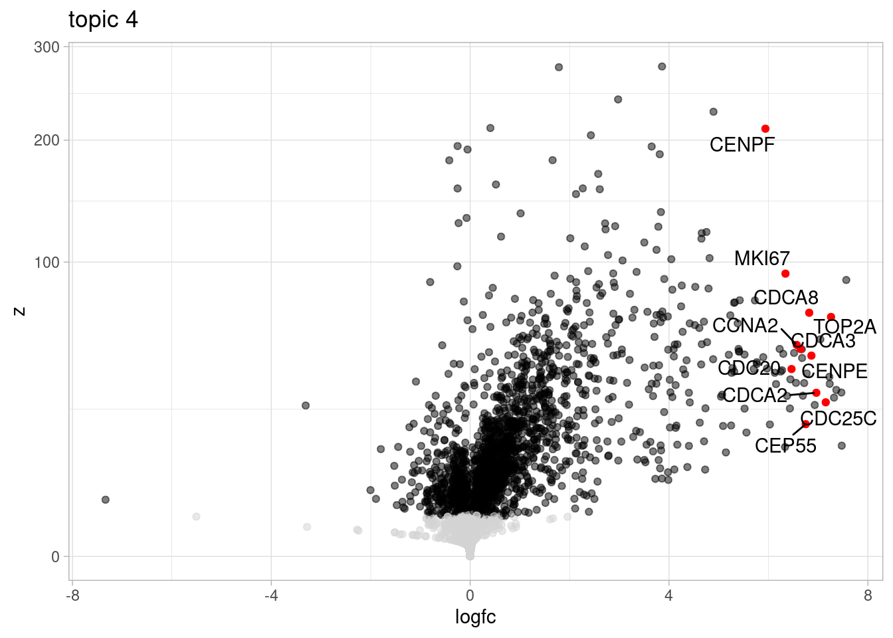

Last updated: 2024-09-02
Checks: 5 2
Knit directory: oxygen_eqtl/
This reproducible R Markdown analysis was created with workflowr (version 1.7.0). The Checks tab describes the reproducibility checks that were applied when the results were created. The Past versions tab lists the development history.
The R Markdown is untracked by Git. To know which version of the R
Markdown file created these results, you’ll want to first commit it to
the Git repo. If you’re still working on the analysis, you can ignore
this warning. When you’re finished, you can run
wflow_publish to commit the R Markdown file and build the
HTML.
Great job! The global environment was empty. Objects defined in the global environment can affect the analysis in your R Markdown file in unknown ways. For reproduciblity it’s best to always run the code in an empty environment.
The command set.seed(20220621) was run prior to running
the code in the R Markdown file. Setting a seed ensures that any results
that rely on randomness, e.g. subsampling or permutations, are
reproducible.
Great job! Recording the operating system, R version, and package versions is critical for reproducibility.
Nice! There were no cached chunks for this analysis, so you can be confident that you successfully produced the results during this run.
Using absolute paths to the files within your workflowr project makes it difficult for you and others to run your code on a different machine. Change the absolute path(s) below to the suggested relative path(s) to make your code more reproducible.
| absolute | relative |
|---|---|
| /project2/gilad/umans/oxygen_eqtl/data/MatrixEQTL/expression/combined_coarse_quality_filter20_032024/ | data/MatrixEQTL/expression/combined_coarse_quality_filter20_032024 |
| /project2/gilad/umans/oxygen_eqtl/data/MatrixEQTL/expression/combined_fine_quality_filter20_032024/ | data/MatrixEQTL/expression/combined_fine_quality_filter20_032024 |
| /project2/gilad/umans/oxygen_eqtl/data/MatrixEQTL/output/combined_coarse_quality_filter20_032024/ | data/MatrixEQTL/output/combined_coarse_quality_filter20_032024 |
| /project2/gilad/umans/oxygen_eqtl/data/MatrixEQTL/output/combined_fine_quality_filter20_032024/ | data/MatrixEQTL/output/combined_fine_quality_filter20_032024 |
| /project2/gilad/umans/oxygen_eqtl/data/MatrixEQTL/output/combined_coarse_quality_filter20_032024/results_combined_ | data/MatrixEQTL/output/combined_coarse_quality_filter20_032024/results_combined_ |
| /project2/gilad/umans/oxygen_eqtl/data/MatrixEQTL/output/combined_coarse_quality_filter20_032024/mash/ | data/MatrixEQTL/output/combined_coarse_quality_filter20_032024/mash |
| /project2/gilad/umans/oxygen_eqtl/data/MatrixEQTL/output/combined_fine_quality_filter20_032024/results_combined_ | data/MatrixEQTL/output/combined_fine_quality_filter20_032024/results_combined_ |
| /project2/gilad/umans/oxygen_eqtl/data/MatrixEQTL/output/combined_fine_quality_filter20_032024/mash/ | data/MatrixEQTL/output/combined_fine_quality_filter20_032024/mash |
| /project2/gilad/umans/oxygen_eqtl/data/MatrixEQTL/output/combined_fine_quality_filter20_032024/mash/MatrixEQTLSumStats_ | data/MatrixEQTL/output/combined_fine_quality_filter20_032024/mash/MatrixEQTLSumStats_ |
| /project2/gilad/umans/oxygen_eqtl/data/MatrixEQTL/output/combined_coarse_quality_filter20_032024/mash/MatrixEQTLSumStats_ | data/MatrixEQTL/output/combined_coarse_quality_filter20_032024/mash/MatrixEQTLSumStats_ |
| /project2/gilad/umans/oxygen_eqtl/output/topics_pseudocell_counts_nocontrol21_normalized.tsv | output/topics_pseudocell_counts_nocontrol21_normalized.tsv |
| /project2/gilad/umans/oxygen_eqtl/output/topics_pseudocells_15_de_output_20240124.RDS | output/topics_pseudocells_15_de_output_20240124.RDS |
| /project2/gilad/umans/oxygen_eqtl/data/MatrixEQTL/output/combined_fine_quality_filter20_032024/results_combined_control10_ | data/MatrixEQTL/output/combined_fine_quality_filter20_032024/results_combined_control10_ |
| /project2/gilad/umans/oxygen_eqtl/data/MatrixEQTL/output/combined_fine_quality_filter20_032024/results_combined_stim1pct_ | data/MatrixEQTL/output/combined_fine_quality_filter20_032024/results_combined_stim1pct_ |
| /project2/gilad/umans/oxygen_eqtl/data/MatrixEQTL/output/combined_fine_quality_filter20_032024/results_combined_stim21pct_ | data/MatrixEQTL/output/combined_fine_quality_filter20_032024/results_combined_stim21pct_ |
| /project2/gilad/umans/oxygen_eqtl/data/MatrixEQTL/output/combined_fine_quality_filter20_032024/mash/post-mash_significant_and_equivalent_snp-gene_pairs_EE.txt | data/MatrixEQTL/output/combined_fine_quality_filter20_032024/mash/post-mash_significant_and_equivalent_snp-gene_pairs_EE.txt |
| /project2/gilad/umans/oxygen_eqtl/topicqtl/mash_and_equivalent_fine_reharmonized.bed | topicqtl/mash_and_equivalent_fine_reharmonized.bed |
| /project2/gilad/umans/oxygen_eqtl/topicqtl/outputs/topics15/all_genes_merged_fine_fasttopics_15_topics.cellregmap.sighits.tsv | topicqtl/outputs/topics15/all_genes_merged_fine_fasttopics_15_topics.cellregmap.sighits.tsv |
| /project2/gilad/umans/oxygen_eqtl/topicqtl/outputs/topics15/fasttopics_fine_15_topics. | topicqtl/outputs/topics15/fasttopics_fine_15_topics. |
| /project2/gilad/umans/oxygen_eqtl/topicqtl/pseudocell_loadings_k15.tsv | topicqtl/pseudocell_loadings_k15.tsv |
| /project2/gilad/umans/oxygen_eqtl/data/MatrixEQTL/snps/YRI_genotypes_maf10hwee-6_full/yri_maf0.1_all.hg38 | data/MatrixEQTL/snps/YRI_genotypes_maf10hwee-6_full/yri_maf0.1_all.hg38 |
Great! You are using Git for version control. Tracking code development and connecting the code version to the results is critical for reproducibility.
Note that you need to be careful to ensure that all relevant files for
the analysis have been committed to Git prior to generating the results
(you can use wflow_publish or
wflow_git_commit). workflowr only checks the R Markdown
file, but you know if there are other scripts or data files that it
depends on. Below is the status of the Git repository when the results
were generated:
Untracked files:
Untracked: .DS_Store
Untracked: 18519_calling.Rmd
Untracked: TOM/
Untracked: _site.yml
Untracked: about.Rmd
Untracked: batch_variability.Rmd
Untracked: batch_variability.knit.md
Untracked: batch_variability.nb.html
Untracked: cache/
Untracked: cellregmap.Rmd
Untracked: celltype.Rmd
Untracked: celltype2.Rmd
Untracked: celltype2.nb.html
Untracked: construct_seurat.Rmd
Untracked: construct_seurat2.Rmd
Untracked: cormotif_eqtl.Rmd
Untracked: de.Rmd
Untracked: de2.Rmd
Untracked: de2.nb.html
Untracked: de_finalized.Rmd
Untracked: de_finalized_reharmonized.Rmd
Untracked: disease_gene_overlap.Rmd
Untracked: disease_gene_overlap_EE.Rmd
Untracked: disease_gene_overlap_EE_reharmonized.Rmd
Untracked: disease_gene_overlap_EE_reharmonized_fine.Rmd
Untracked: disease_gene_overlap_EE_reharmonized_fine_filter10.Rmd
Untracked: docs/
Untracked: figure1.Rmd
Untracked: figure2.Rmd
Untracked: figure3.Rmd
Untracked: figure4.Rmd
Untracked: figures_for_poster.R
Untracked: for_yunqi_mash.rmd
Untracked: gsea.Rmd
Untracked: gsea.nb.html
Untracked: gsea_reharmonized.Rmd
Untracked: hgwgcna.Rmd
Untracked: hgwgcna.nb.html
Untracked: hippo_eqtl.Rmd
Untracked: index.Rmd
Untracked: index_old.Rmd
Untracked: license.Rmd
Untracked: mash_EE.R
Untracked: mash_EE_PC.R
Untracked: mash_de.Rmd
Untracked: mash_for_peter.r
Untracked: matrixEQTL.Rmd
Untracked: matrixEQTL.nb.html
Untracked: matrixEQTL_reharmonized.Rmd
Untracked: ncell_permtesting.R
Untracked: plot_eqtl.Rmd
Untracked: prep_apex.Rmd
Untracked: qtltools.Rmd
Untracked: seurat.export.library1.h5Seurat
Untracked: shared_functions_style_items.R
Untracked: test.rmd
Untracked: topics.R
Untracked: topics.Rmd
Untracked: topics_all.R
Untracked: topics_pseudocell.R
Untracked: topicsde.R
Untracked: voxhunt.Rmd
Note that any generated files, e.g. HTML, png, CSS, etc., are not included in this status report because it is ok for generated content to have uncommitted changes.
There are no past versions. Publish this analysis with
wflow_publish() to start tracking its development.
This page describes steps used to map eQTLs, fit a topic model, and map topic-interacting eQTLs, corresponding to Figure 3.
library(Seurat)Attaching SeuratObjectlibrary(tidyverse)── Attaching packages ─────────────────────────────────────── tidyverse 1.3.1 ──✔ ggplot2 3.4.4 ✔ purrr 1.0.2
✔ tibble 3.2.1 ✔ dplyr 1.1.4
✔ tidyr 1.3.0 ✔ stringr 1.5.0
✔ readr 2.1.4 ✔ forcats 0.5.1── Conflicts ────────────────────────────────────────── tidyverse_conflicts() ──
✖ dplyr::filter() masks stats::filter()
✖ dplyr::lag() masks stats::lag()library(pals)
library(RColorBrewer)
library(magrittr)
Attaching package: 'magrittr'The following object is masked from 'package:purrr':
set_namesThe following object is masked from 'package:tidyr':
extractlibrary(mashr)Loading required package: ashrlibrary(udr)
library(ggrepel)
library(pheatmap)
library(MatrixEQTL)
library(qvalue)
library(snpStats)Loading required package: survivalLoading required package: Matrix
Attaching package: 'Matrix'The following objects are masked from 'package:tidyr':
expand, pack, unpacklibrary(gdata)
Attaching package: 'gdata'The following objects are masked from 'package:dplyr':
combine, first, lastThe following object is masked from 'package:purrr':
keepThe following object is masked from 'package:stats':
nobsThe following object is masked from 'package:utils':
object.sizeThe following object is masked from 'package:base':
startsWithlibrary(vroom)
Attaching package: 'vroom'The following objects are masked from 'package:readr':
as.col_spec, col_character, col_date, col_datetime, col_double,
col_factor, col_guess, col_integer, col_logical, col_number,
col_skip, col_time, cols, cols_condense, cols_only, date_names,
date_names_lang, date_names_langs, default_locale, fwf_cols,
fwf_empty, fwf_positions, fwf_widths, locale, output_column,
problems, speclibrary(ggblend)
source("analysis/shared_functions_style_items.R")Mapping eQTLs using MatrixEQTL requires the following inputs: * SNP names * SNP locations * gene locations * expression phenotypes * covariates * error covariance (relatedness) + estimated relatedness matrix from Gemma showed all individuals in our dataset were equally unrelated; we therefore did not include kinship information in the model
First, use vcftools to filter the genotype VCF to only
the cell lines included in this data collection. Further filter loci by
HWE, minor allele frequency, and maximum number alleles, splitting by
chromosome.
module load vcftools
for g in /project/gilad/1KG_HighCoverageCalls2021/*vcf.gz;
do
q="$(basename -- $g)"
vcftools --gzvcf $g --keep MatrixEQTL/sample_list --maf 0.1 --max-alleles 2 --max-missing 1 --hwe 0.000001 --remove-indels --recode --out MatrixEQTL/snps/YRI_genotypes_maf10hwee-6_full/${q}
doneNext, I used bcftools to reformat the output according to MatrixEQTL’s input requirements:
for g in MatrixEQTL/snps/YRI_genotypes_maf10hwee-6_full/*recode.vcf
do
bcftools query -f '%ID[\t%GT]\n' ${g} > ${g}.snps;
bcftools query -f '%ID\t%CHROM\t%POS\n' ${g} > ${g}.snploc
doneNext, replace genotypes with allele counts, meaning 0/0 becomes 0, 0/1 becomes 1, and 1/1 becomes 2.
For the single chromosome:
for i in *.snps
do
sed -i 's:1/1:2:g' ${i}; sed -i 's:0/1:1:g' ${i}; sed -i 's:1/0:1:g' ${i}; sed -i 's:0/0:0:g' ${i}
done
for i in *.snps
do
sed -i 's:1|1:2:g' ${i}; sed -i 's:0|1:1:g' ${i}; sed -i 's:1|0:1:g' ${i}; sed -i 's:0|0:0:g' ${i}
doneFinally, add back the cell line names (obtained from
bcftools view -h) to name the columns, which was lost in
the bcftools query operation.
for i in *.snps
do
chromname=`basename $i .snps`;
cat ../SNP_header ${chromname}.snps > ${chromname}_for_matrixeqtl.snps;
cat ../SNPloc_header ${chromname}.snploc > ${chromname}_for_matrixeqtl.snploc
doneWe mapped eQTLs within 50 kb of each gene’s TSS, treating each chromosome independently.
for(d in 1:22){
TSSlocs <- read.table("/project2/gilad/kenneth/References/human/cellranger/cellranger4.0/refdata-gex-GRCh38-2020-A/genes/genes.ucsc.sorted.bed", header=F) %>%
filter(V9=="protein_coding" | V9=="lncRNA" | V9=="pseudogene") %>%
group_by(V8) %>%
summarise(chr=V1[1], start=if_else(V6[1]=="+", min(V2), max(V3)), end=if_else(V6[1]=="+", min(V2)+1, max(V3)+1), gene=V8[1]) %>%
select(gene, chr, start, end) %>%
filter(chr==paste("chr", d, sep = "")) %>%
arrange(chr, start)
write.table(TSSlocs, file = paste("data/MatrixEQTL/snps/TSSlocs_chr", d, ".locs", sep=""), row.names = F, col.names = T, quote=F, sep = "\t")
}The following function takes pseudobulk input to writes out formatted, normalized data for MatrixEQTL.
makeExprTableMatrixEQTL_byChr <- function(pseudo, outdir, outprefix, pseudo.classifications, transcriptome, min.count.cpm=0, min.prop.expr=0.5, min.total.count=30) {
for (k in unlist(unique(pseudo$meta[[pseudo.classifications[1]]]))){
for (j in unlist(unique(pseudo$meta[[pseudo.classifications[2]]]))){
counts <- as.matrix(pseudo$counts[, which(pseudo$meta[[pseudo.classifications[1]]]==k & pseudo$meta[[pseudo.classifications[2]]]==j)])
print(paste0(ncol(counts), " samples retained for ", k, " and ", j))
if (ncol(counts) < 3){
next
}
DEG <- DGEList(counts = as.matrix(counts))
keep <- filterByExpr(y = DEG, min.count = min.count.cpm,
min.prop=min.prop.expr,
min.total.count = min.total.count)
print(paste0("Retained ", sum(keep), " genes"))
DEG <- DEG[keep, , keep.lib.sizes=FALSE]
keep <- rowSds(cpm(DEG))>summary(rowSds(cpm(DEG)))[2]
DEG <- DEG[keep, , keep.lib.sizes=FALSE]
DEG <- calcNormFactors(DEG, method="TMM")
DEG_cpm <- edgeR::cpm(DEG, log = TRUE)
colnames(DEG_cpm) <- as.factor(str_sub(colnames(DEG_cpm), start = -7))
DEG_cpm <- data.frame(DEG_cpm)
DEG_inorm <- DEG_cpm %>%
rownames_to_column("ID") %>%
gather("SampleName", "value", -ID) %>%
dplyr::group_by(ID) %>%
dplyr::mutate(scaled_values = scale_this(value)) %>%
dplyr::ungroup() %>%
dplyr::group_by(SampleName) %>%
dplyr::mutate(scaled_value_percentiles = rank(scaled_values, ties.method = "average")/(n()+1)) %>%
dplyr::mutate(ScaledAndInverseNormalized = qnorm(scaled_value_percentiles)) %>%
ungroup() %>%
dplyr::select(ID, SampleName, ScaledAndInverseNormalized) %>%
pivot_wider(names_from="SampleName", values_from="ScaledAndInverseNormalized") %>%
dplyr::select(ID, everything())
for (q in 1:22){
geneset <- filter(transcriptome, `#chr`==paste("chr", q, sep=""))$id
DEG_inorm_write <- DEG_inorm %>% filter(ID %in% geneset)
write.table(DEG_inorm_write, file = paste(outdir, "expressiontable_matrixeqtl_", outprefix, k, "_" , j, "_chr", q, "_cpm-inorm.bed", sep=""), row.names = F, col.names = T, quote=F, sep = "\t")
}
}
rm(DEG, DEG_cpm, keep, counts, DEG_inorm)
}
}I format the transcriptome and filter to protein coding genes:
transcriptome <- read.table("/project2/gilad/kenneth/References/human/cellranger/cellranger4.0/refdata-gex-GRCh38-2020-A/genes/genes.ucsc.sorted.bed", header=F) %>%
filter(V9=="protein_coding") %>%
group_by(V8) %>%
dplyr::summarise(chr=V1[1], start=if_else(V6[1]=="+", min(V2), max(V3)), end=if_else(V6[1]=="+", min(V2)+1, max(V3)+1), id=V8[1]) %>%
select(chr, start, end, id) %>%
arrange(chr, start) %>%
dplyr::summarise("#chr"=chr, start=start, end=end, id=id)Warning: Returning more (or less) than 1 row per `summarise()` group was deprecated in
dplyr 1.1.0.
ℹ Please use `reframe()` instead.
ℹ When switching from `summarise()` to `reframe()`, remember that `reframe()`
always returns an ungrouped data frame and adjust accordingly.
Call `lifecycle::last_lifecycle_warnings()` to see where this warning was
generated.Then pseudobulk and process the expression data:
subset_seurat <- subset(harmony.batchandindividual.sct, subset = vireo.prob.singlet > 0.95 & nCount_RNA<20000 & nCount_RNA>2500 )
pseudo_coarse_quality <- generate.pseudobulk(subset_seurat, labels = c("combined.annotation.coarse.harmony", "treatment", "vireo.individual"))
pseudo_fine_quality <- generate.pseudobulk(subset_seurat, labels = c("combined.annotation.fine.harmony", "treatment", "vireo.individual"))pseudo_coarse_quality <- filter.pseudobulk(pseudo_coarse_quality, threshold = 20)
makeExprTableMatrixEQTL_byChr(pseudo = pseudo_coarse_quality, outdir = "/project2/gilad/umans/oxygen_eqtl/data/MatrixEQTL/expression/combined_coarse_quality_filter20_032024/", outprefix = "combined_coarse_", pseudo.classifications = c("treatment", "combined.annotation.coarse.harmony"), transcriptome = transcriptome, min.count.cpm=6, min.prop.expr=0.5, min.total.count=30)
pseudo_fine_quality <- filter.pseudobulk(pseudo_fine_quality, threshold = 20)
makeExprTableMatrixEQTL_byChr(pseudo = pseudo_fine_quality, outdir = "/project2/gilad/umans/oxygen_eqtl/data/MatrixEQTL/expression/combined_fine_quality_filter20_032024/", outprefix = "combined_fine_", pseudo.classifications = c("treatment", "combined.annotation.fine.harmony"), transcriptome = transcriptome, min.count.cpm=6, min.prop.expr=0.5, min.total.count=30)EQTLs were estimated with a model that included expression principal
components as covariates. The number of expression PCs was chosen so as
to explain more variation in the observed data than in a random
permutation of the expression values.
This was done in the same way for the coarsely- and finely-clustered
data:
for (condition in c("control10", "stim1pct", "stim21pct")){
for (celltype in c("Cajal", "Choroid", "Glia", "Glut", "Immature", "IP", "Inh", "RG", "NeuronOther", "VLMC")){
pheno <- data.frame(t(read.table(paste0("data/MatrixEQTL/expression/combined_coarse_quality_filter20_032024/expressiontable_matrixeqtl_combined_coarse_", condition, "_", celltype, "_chr1_cpm-inorm.bed"), header = TRUE)[,-1])) %>% rownames_to_column(var="individual") %>% arrange(individual) %>% column_to_rownames(var="individual") %>% as.matrix()
for (chrom in 2:22){
cbind(pheno, data.frame(t(read.table(paste0("data/MatrixEQTL/expression/combined_coarse_quality_filter20_032024/expressiontable_matrixeqtl_combined_coarse_", condition, "_", celltype, "_chr", chrom, "_cpm-inorm.bed"), header = TRUE)[,-1])) %>% rownames_to_column(var="individual") %>% arrange(individual) %>% column_to_rownames(var="individual") %>% as.matrix())
}
pheno.permuted <- matrix(nrow=nrow(pheno), ncol=ncol(pheno))
for (i in 1:nrow(pheno)){
pheno.permuted[i,] <- sample(pheno[i,], size=ncol(pheno))
}
pca.results <- prcomp(pheno)
pca <- pca.results %>% summary() %>% extract2("importance") %>%
t() %>%
as.data.frame() %>%
rownames_to_column("PC")
pca.permuted <- prcomp(pheno.permuted) %>% summary() %>% extract2("importance") %>% t() %>% as.data.frame() %>% rownames_to_column("PC")
merged <- bind_rows(list(pca=pca, pca.permuted=pca.permuted), .id="source") %>%
mutate(PC=as.numeric(str_replace(PC, "PC", "")))
#Get number of PCs
NumPCs <- merged %>%
dplyr::select(PC, Prop=`Proportion of Variance`, source) %>%
spread(key="source", value="Prop") %>%
filter(pca > pca.permuted) %>% pull(PC) %>% max()
if (NumPCs >= nrow(pheno)){
NumPCs <- nrow(pheno) - 1
}
for (outchrom in 1:22){
pca.results$x[,1:NumPCs] %>% t() %>%
round(5) %>%
as.data.frame() %>%
rownames_to_column("id") %>%
write_tsv(paste0("data/MatrixEQTL/covariates/combined_coarse_quality_filter20_032024/expressiontable_matrixeqtl_combined_coarse_", condition, "_", celltype, "_chr", outchrom, "_cpm-inorm.bed.covs"))
}
print(paste0(celltype, " done!", "\n"))
rm(pheno, pheno.permuted, pca.results, NumPCs, merged)
}
}For finely clustered:
for (condition in c("control10", "stim1pct", "stim21pct")){
for (celltype in c("Cajal", "Choroid", "CorticalHem", "GliaProg", "Glut", "GlutNTS", "Immature", "IP", "IPcycling", "Inh", "InhGNRH", "InhThalamic", "InhSST", "RG", "RGcycling", "NeuronOther", "VLMC")){
pheno <- data.frame(t(read.table(paste0("data/MatrixEQTL/expression/combined_fine_quality_filter20_032024/expressiontable_matrixeqtl_combined_fine_", condition, "_", celltype, "_chr1_cpm-inorm.bed"), header = TRUE)[,-1])) %>% rownames_to_column(var="individual") %>% arrange(individual) %>% column_to_rownames(var="individual") %>% as.matrix()
for (chrom in 2:22){
cbind(pheno, data.frame(t(read.table(paste0("data/MatrixEQTL/expression/combined_fine_quality_filter20_032024/expressiontable_matrixeqtl_combined_fine_", condition, "_", celltype, "_chr", chrom, "_cpm-inorm.bed"), header = TRUE)[,-1])) %>% rownames_to_column(var="individual") %>% arrange(individual) %>% column_to_rownames(var="individual") %>% as.matrix())
}
pheno.permuted <- matrix(nrow=nrow(pheno), ncol=ncol(pheno))
for (i in 1:nrow(pheno)){
pheno.permuted[i,] <- sample(pheno[i,], size=ncol(pheno))
}
pca.results <- prcomp(pheno)
pca <- pca.results %>% summary() %>% extract2("importance") %>% t() %>% as.data.frame() %>%
rownames_to_column("PC")
pca.permuted <- prcomp(pheno.permuted) %>% summary() %>% extract2("importance") %>% t() %>% as.data.frame() %>% rownames_to_column("PC")
merged <- bind_rows(list(pca=pca, pca.permuted=pca.permuted), .id="source") %>%
mutate(PC=as.numeric(str_replace(PC, "PC", "")))
#Get number of PCs
NumPCs <- merged %>%
dplyr::select(PC, Prop=`Proportion of Variance`, source) %>%
spread(key="source", value="Prop") %>%
filter(pca > pca.permuted) %>% pull(PC) %>% max()
if (NumPCs >= nrow(pheno)){
NumPCs <- nrow(pheno) - 1
}
for (outchrom in 1:22){
pca.results$x[,1:NumPCs] %>% t() %>%
round(5) %>%
as.data.frame() %>%
rownames_to_column("id") %>%
write_tsv(paste0("data/MatrixEQTL/covariates/combined_fine_quality_filter20_032024/expressiontable_matrixeqtl_combined_fine_", condition, "_", celltype, "_chr", outchrom, "_cpm-inorm.bed.covs"))
}
print(paste0(celltype, " done!", "\n"))
rm(pheno, pheno.permuted, pca.results, NumPCs, merged)
}
}Going forward, we omit the following cell types, which have too few individuals in one conditoin and, consequently, produce unstable covariate estimates: Cajal-Retzius cells, SST+ inhibitory neurons, VLMC.
Now I run MatrixEQTL in each cell type and each condition, using
shell script MatrixEQTL_simple.sh.
module load R/4.2.0
for celltype in Choroid Glia Glut Immature IP Inh NeuronOther RG ;
do
sh MatrixEQTL_simple.sh /project2/gilad/umans/oxygen_eqtl/data/MatrixEQTL "combined_coarse_quality_filter20_032024/expressiontable_matrixeqtl_combined_coarse_control10" "YRI_genotypes_maf10hwee-6_full" /project2/gilad/umans/oxygen_eqtl/data/MatrixEQTL/snps/TSSlocs.locs /project2/gilad/umans/oxygen_eqtl/data/relatedness/YRI_relatedness_gemma.sXX.txt 50000 2 ${celltype}
sleep 0.1
done
for celltype in Choroid Glia Glut Immature IP Inh NeuronOther RG ;
do
sh MatrixEQTL_simple.sh /project2/gilad/umans/oxygen_eqtl/data/MatrixEQTL "combined_coarse_quality_filter20_032024/expressiontable_matrixeqtl_combined_coarse_stim1pct" "YRI_genotypes_maf10hwee-6_full" /project2/gilad/umans/oxygen_eqtl/data/MatrixEQTL/snps/TSSlocs.locs /project2/gilad/umans/oxygen_eqtl/data/relatedness/YRI_relatedness_gemma.sXX.txt 50000 2 ${celltype}
sleep 0.1
done
for celltype in Choroid Glia Glut Immature IP Inh NeuronOther RG ;
do
sh MatrixEQTL_simple.sh /project2/gilad/umans/oxygen_eqtl/data/MatrixEQTL "combined_coarse_quality_filter20_032024/expressiontable_matrixeqtl_combined_coarse_stim21pct" "YRI_genotypes_maf10hwee-6_full" /project2/gilad/umans/oxygen_eqtl/data/MatrixEQTL/snps/TSSlocs.locs /project2/gilad/umans/oxygen_eqtl/data/relatedness/YRI_relatedness_gemma.sXX.txt 50000 2 ${celltype}
sleep 0.1
donemodule load R/4.2.0
for celltype in Choroid CorticalHem GliaProg Glut GlutNTS Immature IP IPcycling Inh InhGNRH InhThalamic RG RGcycling NeuronOther ;
do
sh MatrixEQTL_simple.sh /project2/gilad/umans/oxygen_eqtl/data/MatrixEQTL "combined_fine_quality_filter20_032024/expressiontable_matrixeqtl_combined_fine_control10" "YRI_genotypes_maf10hwee-6_full" /project2/gilad/umans/oxygen_eqtl/data/MatrixEQTL/snps/TSSlocs.locs /project2/gilad/umans/oxygen_eqtl/data/relatedness/YRI_relatedness_gemma.sXX.txt 50000 2 ${celltype}
sleep 0.1
done
for celltype in Choroid CorticalHem GliaProg Glut GlutNTS Immature IP IPcycling Inh InhGNRH InhThalamic RG RGcycling NeuronOther ;
do
sh MatrixEQTL_simple.sh /project2/gilad/umans/oxygen_eqtl/data/MatrixEQTL "combined_fine_quality_filter20_032024/expressiontable_matrixeqtl_combined_fine_stim1pct" "YRI_genotypes_maf10hwee-6_full" /project2/gilad/umans/oxygen_eqtl/data/MatrixEQTL/snps/TSSlocs.locs /project2/gilad/umans/oxygen_eqtl/data/relatedness/YRI_relatedness_gemma.sXX.txt 50000 2 ${celltype}
sleep 0.1
done
for celltype in Choroid CorticalHem GliaProg Glut GlutNTS Immature IP IPcycling Inh InhGNRH InhThalamic RG RGcycling NeuronOther ;
do
sh MatrixEQTL_simple.sh /project2/gilad/umans/oxygen_eqtl/data/MatrixEQTL "combined_fine_quality_filter20_032024/expressiontable_matrixeqtl_combined_fine_stim21pct" "YRI_genotypes_maf10hwee-6_full" /project2/gilad/umans/oxygen_eqtl/data/MatrixEQTL/snps/TSSlocs.locs /project2/gilad/umans/oxygen_eqtl/data/relatedness/YRI_relatedness_gemma.sXX.txt 50000 2 ${celltype}
sleep 0.1
doneBecause I ran each chromosome in parallel, I combine the results across chromosomes:
for (condition in c("control10", "stim1pct", "stim21pct")){
for (cells in c("Choroid", "Glia", "Glut", "Immature", "IP", "Inh", "RG", "NeuronOther")){
combined_across_chroms(results_directory = "/project2/gilad/umans/oxygen_eqtl/data/MatrixEQTL/output/combined_coarse_quality_filter20_032024/", condition = condition, celltype = cells, results_basename = "expressiontable_matrixeqtl_combined_coarse_", output_basename = "results_combined_")
}
}
for (condition in c("control10", "stim1pct", "stim21pct")){
for (cells in c("Choroid", "CorticalHem", "GliaProg", "Glut", "GlutNTS", "Immature", "IP", "IPcycling", "Inh", "InhGNRH", "InhThalamic", "RG", "RGcycling", "NeuronOther")){
combined_across_chroms(results_directory = "/project2/gilad/umans/oxygen_eqtl/data/MatrixEQTL/output/combined_fine_quality_filter20_032024/", condition = condition, celltype = cells, results_basename = "expressiontable_matrixeqtl_combined_fine_", output_basename = "results_combined_")
}
}Next, use mash to combine results across treatment conditions for each cell type. I first reformat the output to match the output from fastqtl, which allows us to use the fastqtl2mash tool to prepare for mash.
for (i in c("Choroid", "Glia", "Glut", "Immature", "IP", "Inh", "RG", "NeuronOther")){
for (k in c("control10", "stim1pct", "stim21pct")){
results <- read_table(paste0("/project2/gilad/umans/oxygen_eqtl/data/MatrixEQTL/output/combined_coarse_quality_filter20_032024/results_combined_", k, "_", i, "_nominal.txt"), col_names = TRUE, progress = FALSE, show_col_types = FALSE) %>%
mutate(se_beta=beta/statistic) %>%
dplyr::select(gene, snps, beta, se_beta, pvalue) %>%
na.omit() %>%
arrange(gene)
write_tsv(results, file = paste0("/project2/gilad/umans/oxygen_eqtl/data/MatrixEQTL/output/combined_coarse_quality_filter20_032024/mash/", i, "_", k, "_formash.out.gz"), col_names = TRUE, quote = "none")
rm(results)
print(paste0(i, " ", k))
}
print(paste0("finished ", i))
}
for (i in c("Choroid", "CorticalHem", "GliaProg", "Glut", "GlutNTS", "Immature", "IP", "IPcycling", "Inh", "InhGNRH", "InhThalamic", "RG", "RGcycling", "NeuronOther")){
for (k in c("control10", "stim1pct", "stim21pct")){
results <- read_table(paste0("/project2/gilad/umans/oxygen_eqtl/data/MatrixEQTL/output/combined_fine_quality_filter20_032024/results_combined_", k, "_", i, "_nominal.txt"), col_names = TRUE, progress = FALSE, show_col_types = FALSE) %>%
mutate(se_beta=beta/statistic) %>%
dplyr::select(gene, snps, beta, se_beta, pvalue) %>%
na.omit() %>%
arrange(gene)
write_tsv(results, file = paste0("/project2/gilad/umans/oxygen_eqtl/data/MatrixEQTL/output/combined_fine_quality_filter20_032024/mash/", i, "_", k, "_formash.out.gz"), col_names = TRUE, quote = "none")
rm(results)
print(paste0(i, " ", k))
}
print(paste0("finished ", i))
}Fastqtl2mash was run separately for each cell type, and then mash was run on each cell type.
module load R/4.2.0
for celltype in Choroid CorticalHem GliaProg Glut GlutNTS Immature Inh InhGNRH InhThalamic IP IPcycling NeuronOther RG RGcycling;
do
sh mash.sh ${celltype} "/project2/gilad/umans/oxygen_eqtl/data/MatrixEQTL/output/combined_fine_quality_filter20_032024/mash/"
sleep 0.1
done
module load R/4.2.0
for celltype in Choroid Glia Glut Immature Inh IP NeuronOther RG Combined;
do
sh mash.sh ${celltype} "/project2/gilad/umans/oxygen_eqtl/data/MatrixEQTL/output/combined_coarse_quality_filter20_032024/mash/"
sleep 0.1
doneFinally, combine mash output and, for each gene, note the number of pairwise condition comparisons in which effects are shared (ie, significant in at least one condition and effects within 2.5-fold difference) and which genes have effects shared across all conditions.
mash_by_celltype_all_EE <- function(celltype, mag, sharing_degree, lfsr_thresh) {
m2 <- readRDS(file = paste0("/project2/gilad/umans/oxygen_eqtl/data/MatrixEQTL/output/combined_fine_quality_filter20_032024/mash/MatrixEQTLSumStats_", celltype, "only_udr_yunqi_vhatem_EE.rds"))
lfsr.condition <- m2$result$lfsr
pm.mash.beta_condition <- m2$result$PosteriorMean #no need to adjust, in EE model we're directly outputting beta
colnames(lfsr.condition) <- paste0(map_chr(strsplit(colnames(lfsr.condition), split="_"), 2), "_lfsr")
colnames(pm.mash.beta_condition) <- paste0(map_chr(strsplit(colnames(pm.mash.beta_condition), split="_"), 2), "_beta")
pm.mash.beta_condition <- lfsr.condition %>%
cbind(pm.mash.beta_condition) %>%
as.data.frame() %>%
mutate(gene=as.character(lapply(strsplit(rownames(.), '[_]'), `[[`, 1)),
gene_snp=rownames(.)) %>%
rowwise() %>%
mutate(sharing=ifelse((stim1pct_lfsr < lfsr_thresh | control10_lfsr < lfsr_thresh | stim21pct_lfsr < lfsr_thresh) & #significant effect somewhere
stim1pct_lfsr<1 & # can set arbitrary significance threshold for all other conditions
control10_lfsr<1 &
stim21pct_lfsr < 1 &
# pairwise magnitude comparisons must be within chosen factor for at least one pair of conditions
sum((stim1pct_beta/stim21pct_beta < mag) &
(stim1pct_beta/stim21pct_beta > (1/mag) ),
(control10_beta/stim1pct_beta < mag) &
(control10_beta/stim1pct_beta > (1/mag)),
(control10_beta/stim21pct_beta < mag) &
(control10_beta/stim21pct_beta > (1/mag))
) > sharing_degree,
T, F),
allsharing =
(stim1pct_beta/stim21pct_beta < mag) &
(stim1pct_beta/stim21pct_beta > (1/mag)) &
(control10_beta/stim1pct_beta < mag) &
(control10_beta/stim1pct_beta > (1/mag)) &
(control10_beta/stim21pct_beta < mag) &
(control10_beta/stim21pct_beta > (1/mag)),
sharing_contexts=sum(((stim1pct_beta/stim21pct_beta < mag) &
(stim1pct_beta/stim21pct_beta > (1/mag) )),
( (control10_beta/stim1pct_beta < mag) &
(control10_beta/stim1pct_beta > (1/mag))),
((control10_beta/stim21pct_beta < mag) &
(control10_beta/stim21pct_beta > (1/mag)))
) ,
sigsharing=sum(
stim1pct_lfsr < lfsr_thresh & stim21pct_lfsr < lfsr_thresh &
((stim1pct_beta/stim21pct_beta < mag) &
(stim1pct_beta/stim21pct_beta > (1/mag) )),
# pairwise magnitude comparisons must be within chosen factor for at least one pair of conditions
control10_lfsr < lfsr_thresh & stim1pct_lfsr < lfsr_thresh &
((control10_beta/stim1pct_beta < mag) &
(control10_beta/stim1pct_beta > (1/mag))),
control10_lfsr < lfsr_thresh & stim21pct_lfsr < lfsr_thresh &
((control10_beta/stim21pct_beta < mag) &
(control10_beta/stim21pct_beta > (1/mag)))
),
sigdifferent=sum(
stim1pct_lfsr < lfsr_thresh & stim21pct_lfsr < lfsr_thresh &
((stim1pct_beta/stim21pct_beta > mag) |
(stim1pct_beta/stim21pct_beta < (1/mag) )),
# pairwise magnitude comparisons must be within chosen factor for at least one pair of conditions
control10_lfsr < lfsr_thresh & stim1pct_lfsr < lfsr_thresh &
((control10_beta/stim1pct_beta > mag) |
(control10_beta/stim1pct_beta < (1/mag))),
control10_lfsr < lfsr_thresh & stim21pct_lfsr < lfsr_thresh &
((control10_beta/stim21pct_beta > mag) |
(control10_beta/stim21pct_beta < (1/mag)))
),
hypoxia_normoxia_shared= (control10_beta/stim1pct_beta < mag) &
(control10_beta/stim1pct_beta > (1/mag)),
hyperoxia_normoxia_shared = (control10_beta/stim21pct_beta < mag) &
(control10_beta/stim21pct_beta > (1/mag)),
hypoxia_hyperoxia_shared = (stim1pct_beta/stim21pct_beta < mag) &
(stim1pct_beta/stim21pct_beta > (1/mag) ),
sig_anywhere=(stim1pct_lfsr < lfsr_thresh | control10_lfsr < lfsr_thresh | stim21pct_lfsr < lfsr_thresh)
) %>%
ungroup() %>%
dplyr::select(gene, gene_snp, control10_lfsr, stim1pct_lfsr, stim21pct_lfsr, control10_beta, stim1pct_beta, stim21pct_beta, sharing, sig_anywhere, sigsharing, sigdifferent, sharing_contexts, allsharing, hypoxia_normoxia_shared, hyperoxia_normoxia_shared, hypoxia_hyperoxia_shared)
pm.mash.beta_condition
}
mash_by_condition <- lapply(c("Choroid", "CorticalHem", "GliaProg", "Glut", "GlutNTS", "Immature", "Inh", "InhGNRH", "InhThalamic", "IP", "IPcycling", "NeuronOther", "RG", "RGcycling"), mash_by_celltype_all_EE, mag=2.5, sharing_degree=0, lfsr_thresh=0.05)
mash_by_condition_output_EE <- gdata::combine(mash_by_condition[[1]], mash_by_condition[[2]], mash_by_condition[[3]], mash_by_condition[[4]], mash_by_condition[[5]], mash_by_condition[[6]], mash_by_condition[[7]], mash_by_condition[[8]], mash_by_condition[[9]], mash_by_condition[[10]], mash_by_condition[[11]], mash_by_condition[[12]], mash_by_condition[[13]], mash_by_condition[[14]], names = c("Choroid", "CorticalHem", "GliaProg", "Glut", "GlutNTS", "Immature", "Inh", "InhGNRH", "InhThalamic", "IP", "IPcycling", "NeuronOther", "RG", "RGcycling"))
saveRDS(mash_by_condition_output_EE, file = "output/combined_mash-by-condition_EE_fine_reharmonized_032024.rds")And do the same for the coarse-classified cells:
mash_by_celltype_all_EE <- function(celltype, mag, sharing_degree, lfsr_thresh) {
m2 <- readRDS(file = paste0("/project2/gilad/umans/oxygen_eqtl/data/MatrixEQTL/output/combined_coarse_quality_filter20_032024/mash/MatrixEQTLSumStats_", celltype, "only_udr_yunqi_vhatem_EE.rds"))
lfsr.condition <- m2$result$lfsr
pm.mash.beta_condition <- m2$result$PosteriorMean #no need to adjust, in EE model we're directly outputting beta
colnames(lfsr.condition) <- paste0(map_chr(strsplit(colnames(lfsr.condition), split="_"), 2), "_lfsr")
colnames(pm.mash.beta_condition) <- paste0(map_chr(strsplit(colnames(pm.mash.beta_condition), split="_"), 2), "_beta")
pm.mash.beta_condition <- lfsr.condition %>%
cbind(pm.mash.beta_condition) %>%
as.data.frame() %>%
mutate(gene=as.character(lapply(strsplit(rownames(.), '[_]'), `[[`, 1)),
gene_snp=rownames(.)) %>%
rowwise() %>%
mutate(sharing=ifelse((stim1pct_lfsr < lfsr_thresh | control10_lfsr < lfsr_thresh | stim21pct_lfsr < lfsr_thresh) & #significant effect somewhere
stim1pct_lfsr<1 & # can set arbitrary significance threshold for all other conditions
control10_lfsr<1 &
stim21pct_lfsr < 1 &
# pairwise magnitude comparisons must be within chosen factor for at least one pair of conditions
sum((stim1pct_beta/stim21pct_beta < mag) &
(stim1pct_beta/stim21pct_beta > (1/mag) ),
(control10_beta/stim1pct_beta < mag) &
(control10_beta/stim1pct_beta > (1/mag)),
(control10_beta/stim21pct_beta < mag) &
(control10_beta/stim21pct_beta > (1/mag))
) > sharing_degree,
T, F),
allsharing =
(stim1pct_beta/stim21pct_beta < mag) &
(stim1pct_beta/stim21pct_beta > (1/mag)) &
(control10_beta/stim1pct_beta < mag) &
(control10_beta/stim1pct_beta > (1/mag)) &
(control10_beta/stim21pct_beta < mag) &
(control10_beta/stim21pct_beta > (1/mag)),
sharing_contexts=sum(((stim1pct_beta/stim21pct_beta < mag) &
(stim1pct_beta/stim21pct_beta > (1/mag) )),
( (control10_beta/stim1pct_beta < mag) &
(control10_beta/stim1pct_beta > (1/mag))),
((control10_beta/stim21pct_beta < mag) &
(control10_beta/stim21pct_beta > (1/mag)))
) ,
sigsharing=sum(
stim1pct_lfsr < lfsr_thresh & stim21pct_lfsr < lfsr_thresh &
((stim1pct_beta/stim21pct_beta < mag) &
(stim1pct_beta/stim21pct_beta > (1/mag) )),
# pairwise magnitude comparisons must be within chosen factor for at least one pair of conditions
control10_lfsr < lfsr_thresh & stim1pct_lfsr < lfsr_thresh &
((control10_beta/stim1pct_beta < mag) &
(control10_beta/stim1pct_beta > (1/mag))),
control10_lfsr < lfsr_thresh & stim21pct_lfsr < lfsr_thresh &
((control10_beta/stim21pct_beta < mag) &
(control10_beta/stim21pct_beta > (1/mag)))
),
sigdifferent=sum(
stim1pct_lfsr < lfsr_thresh & stim21pct_lfsr < lfsr_thresh &
((stim1pct_beta/stim21pct_beta > mag) |
(stim1pct_beta/stim21pct_beta < (1/mag) )),
# pairwise magnitude comparisons must be within chosen factor for at least one pair of conditions
control10_lfsr < lfsr_thresh & stim1pct_lfsr < lfsr_thresh &
((control10_beta/stim1pct_beta > mag) |
(control10_beta/stim1pct_beta < (1/mag))),
control10_lfsr < lfsr_thresh & stim21pct_lfsr < lfsr_thresh &
((control10_beta/stim21pct_beta > mag) |
(control10_beta/stim21pct_beta < (1/mag)))
),
hypoxia_normoxia_shared= (control10_beta/stim1pct_beta < mag) &
(control10_beta/stim1pct_beta > (1/mag)),
hyperoxia_normoxia_shared = (control10_beta/stim21pct_beta < mag) &
(control10_beta/stim21pct_beta > (1/mag)),
hypoxia_hyperoxia_shared = (stim1pct_beta/stim21pct_beta < mag) &
(stim1pct_beta/stim21pct_beta > (1/mag) ),
sig_anywhere=(stim1pct_lfsr < lfsr_thresh | control10_lfsr < lfsr_thresh | stim21pct_lfsr < lfsr_thresh)
) %>%
ungroup() %>%
dplyr::select(gene, gene_snp, control10_lfsr, stim1pct_lfsr, stim21pct_lfsr, control10_beta, stim1pct_beta, stim21pct_beta, sharing, sig_anywhere, sigsharing, sigdifferent, sharing_contexts, allsharing, hypoxia_normoxia_shared, hyperoxia_normoxia_shared, hypoxia_hyperoxia_shared)
pm.mash.beta_condition
}
mash_by_condition <- lapply(c("Choroid", "Glia", "Glut", "Immature", "Inh", "IP", "NeuronOther", "RG"), mash_by_celltype_all_EE, mag=2.5, sharing_degree=0, lfsr_thresh=0.05)
mash_by_condition_output_EE <- gdata::combine(mash_by_condition[[1]], mash_by_condition[[2]], mash_by_condition[[3]], mash_by_condition[[4]], mash_by_condition[[5]], mash_by_condition[[6]], mash_by_condition[[7]], mash_by_condition[[8]], names = c("Choroid", "Glia", "Glut", "Immature", "Inh", "IP", "NeuronOther", "RG"))
saveRDS(mash_by_condition_output_EE, file = "output/combined_mash-by-condition_EE_coarse_reharmonized_032024.rds")GTEx has assessed eQTLs in 13 CNS tissue sites, collectively finding 21,085 significant eGenes. Of course, just about any gene will be an eGene when compared against this reference set. Instead, we compare here to the two cerebral cortex datasets, the most analogous tissues to our dorsal brain organoids, which come from two different tissue sources.
gtex_cortex_signif <- read.table(file = "/project/gilad/umans/references/gtex/GTEx_Analysis_v8_eQTL/Brain_Cortex.v8.egenes.txt.gz", header = TRUE, sep = "\t", stringsAsFactors = FALSE) %>% filter(qval<0.05) %>% pull(gene_name)
gtex_frontalcortex_signif <- read.table(file = "/project/gilad/umans/references/gtex/GTEx_Analysis_v8_eQTL/Brain_Frontal_Cortex_BA9.v8.egenes.txt.gz", header = TRUE, sep = "\t", stringsAsFactors = FALSE) %>% filter(qval<0.05) %>% pull(gene_name)
gtex_cortex_signif <- unique(c(gtex_cortex_signif, gtex_frontalcortex_signif))Now, classify eGenes from the organoid dataset by whether they were significant under normoxia and whether they are responsive to manipulating oxygen. These two binary classifications result in 4 groups: (1) shared effects in all conditions, detectable under normoxia; (2) dynamic and detectable under normoxia; (3) dynamic and not detectable under normoxia; and (4) shared effects under all conditions but not detectable under normoxia. Implicitly, group 4 effects needed additional treatment conditions to detect them not because they’re responsive to treatment but because of the additional power we get.
mash_by_condition_output <- readRDS(file = "output/combined_mash-by-condition_EE_fine_reharmonized_032024.rds") %>% ungroup()
mash_by_condition_output %>%
filter(sig_anywhere) %>%
mutate(class=case_when(control10_lfsr < 0.05 & allsharing ~ "class1",
control10_lfsr < 0.05 & !allsharing ~ "class2",
sig_anywhere & control10_lfsr > 0.05 & !allsharing ~ "class3",
allsharing & control10_lfsr > 0.05 & (stim1pct_lfsr < 0.05 | stim21pct_lfsr < 0.05) ~ "class4")) %>% group_by(source, class) %>% summarize(egenes=n()) %>%
ggplot(aes(x=factor(source, rev(fine.order)), y=egenes, fill=factor(class, levels = c("class3", "class2", "class4", "class1"), ordered = TRUE))) + geom_bar(stat="identity") +
coord_flip() + theme_light() + theme(legend.title = element_blank()) + scale_fill_manual(values=class_colors) `summarise()` has grouped output by 'source'. You can override using the
`.groups` argument.Our hypothesis is that the the dynamic effects that emerge under treatment should be less represented in GTEx, compared to effects that are evident at baseline, as GTEx does not (explicitly) assess gene expression under different environmental perturbations (although post-mortem brain tissue may experience some amount of hypoxia and/or hyperoxia during sample collection). While not testing for sharing of regulatory sites or effects here, we can ask whether these dynamic eGenes are less likely to be present in GTEx compared to the dynamic eGenes present at baseline.
mash_by_condition_output %>%
filter(sig_anywhere) %>%
mutate(class=case_when(control10_lfsr < 0.05 & allsharing ~ "class1",
control10_lfsr < 0.05 & !allsharing ~ "class2",
sig_anywhere & control10_lfsr > 0.05 & !allsharing ~ "class3",
sig_anywhere & allsharing ~ "class4")) %>% #because of the order of assignment, this does not include "class1" egenes, ie those that are detectable under normoxia. equivalent to `allsharing & control10_lfsr > 0.05 & (stim1pct_lfsr < 0.05 | stim21pct_lfsr < 0.05) ~ "class4"`
group_by(source, class) %>%
summarise(egene_gtex = sum(gene %in% gtex_cortex_signif),
egene_in_gtex_fraction = round((sum(gene %in% gtex_cortex_signif))/n(), 4)) %>%
ggplot(aes(x=factor(class, levels = c("class1", "class4", "class2", "class3")), y=egene_in_gtex_fraction)) +
geom_boxplot(outlier.shape = NA, aes(color=class)) +
geom_point(aes(group=source, color=source), position = position_jitter(width = 0.2, height = 0)) +
xlab("eGene class (see note)") +
ylab("Fraction of eGenes in GTEx") +
theme_light() +
scale_color_manual(values=c(manual_palette_fine, class_colors)) + theme(legend.position="none") `summarise()` has grouped output by 'source'. You can override using the
`.groups` argument.To test the “class 3” (dynamic, not detected under normoxia) eGenes against the non-dynamic eGenes:
wilcox.test(mash_by_condition_output %>%
filter(sig_anywhere) %>%
mutate(class=case_when(control10_lfsr < 0.05 & allsharing ~ "groupB",
control10_lfsr < 0.05 & !allsharing ~ "groupB",
sig_anywhere & control10_lfsr > 0.05 & !allsharing ~ "groupA",
sig_anywhere & allsharing ~ "groupC")) %>%
group_by(source, class) %>%
summarise(egene_gtex = sum(gene %in% (unlist(gtex_cortex_signif) %>% unique())),
egene_in_gtex_fraction = (sum(gene %in% (unlist(gtex_cortex_signif) %>% unique())))/n()) %>% filter(class=="groupA") %>% pull(egene_in_gtex_fraction),
mash_by_condition_output %>%
filter(sig_anywhere) %>%
mutate(class=case_when(control10_lfsr < 0.05 & allsharing ~ "groupB",
control10_lfsr < 0.05 & !allsharing ~ "groupB",
sig_anywhere & control10_lfsr > 0.05 & !allsharing ~ "groupA",
sig_anywhere & allsharing ~ "groupC")) %>%
group_by(source, class) %>%
summarise(egene_gtex = sum(gene %in% (unlist(gtex_cortex_signif) %>% unique())),
egene_in_gtex_fraction = (sum(gene %in% (unlist(gtex_cortex_signif) %>% unique())))/n()) %>% filter(class %in% c("groupB")) %>% pull(egene_in_gtex_fraction), paired = TRUE, alternative = "less")`summarise()` has grouped output by 'source'. You can override using the
`.groups` argument.
`summarise()` has grouped output by 'source'. You can override using the
`.groups` argument.
Wilcoxon signed rank exact test
data: mash_by_condition_output %>% filter(sig_anywhere) %>% mutate(class = case_when(control10_lfsr < 0.05 & allsharing ~ "groupB", control10_lfsr < 0.05 & !allsharing ~ "groupB", sig_anywhere & control10_lfsr > 0.05 & !allsharing ~ "groupA", sig_anywhere & allsharing ~ "groupC")) %>% group_by(source, class) %>% summarise(egene_gtex = sum(gene %in% (unlist(gtex_cortex_signif) %>% unique())), egene_in_gtex_fraction = (sum(gene %in% (unlist(gtex_cortex_signif) %>% unique())))/n()) %>% filter(class == "groupA") %>% pull(egene_in_gtex_fraction) and mash_by_condition_output %>% filter(sig_anywhere) %>% mutate(class = case_when(control10_lfsr < 0.05 & allsharing ~ "groupB", control10_lfsr < 0.05 & !allsharing ~ "groupB", sig_anywhere & control10_lfsr > 0.05 & !allsharing ~ "groupA", sig_anywhere & allsharing ~ "groupC")) %>% group_by(source, class) %>% summarise(egene_gtex = sum(gene %in% (unlist(gtex_cortex_signif) %>% unique())), egene_in_gtex_fraction = (sum(gene %in% (unlist(gtex_cortex_signif) %>% unique())))/n()) %>% filter(class %in% c("groupB")) %>% pull(egene_in_gtex_fraction)
V = 14, p-value = 0.006714
alternative hypothesis: true location shift is less than 0The fraction of eGenes across cell types that would not be detected without treatment conditions is:
mash_by_condition_output %>%
filter(sig_anywhere) %>%
mutate(class=case_when(control10_lfsr < 0.05 & allsharing ~ "class1",
control10_lfsr < 0.05 & !allsharing ~ "class2",
sig_anywhere & control10_lfsr > 0.05 & !allsharing ~ "class3",
allsharing & control10_lfsr > 0.05 & (stim1pct_lfsr < 0.05 | stim21pct_lfsr < 0.05) ~ "class4")) %>%
mutate(control_undetected=class %in% c("class3", "class4")) %>%
group_by(source) %>%
summarize(undetected_rate=sum(control_undetected)/n()) %>%
summarize(median(undetected_rate))# A tibble: 1 × 1
`median(undetected_rate)`
<dbl>
1 0.563The total number of eGenes detected here, in any condition or cell type, is:
mash_by_condition_output %>%
filter(sig_anywhere) %>%
pull(gene) %>%
unique() %>%
length()[1] 8320Many eGenes will have treatment-responsive effects in one cell type and treatment-shared effects in another cell type. The number of eGenes that have treatment-insensitive effects in at least one cell type is:
mash_by_condition_output %>%
filter(sig_anywhere) %>%
filter(allsharing) %>%
pull(gene) %>%
unique() %>%
length()[1] 5952The number of eGenes that have treatment-sensitive effects in at least one cell type is:
mash_by_condition_output %>%
filter(sig_anywhere) %>%
filter(!allsharing) %>%
pull(gene) %>%
unique() %>%
length()[1] 7338Calculate the number of “dynamic” vs “standard” eQTLs per cell type, here defined by shared effect sizes. Note that because mash chooses a single eQTL/eGene in each cell type, within a cell type counting number of eGenes and eQTLs is equivalent.
mash_by_condition_output %>%
filter(sig_anywhere) %>%
group_by(source) %>%
mutate(class=case_when(allsharing ~ "allsharing",
hypoxia_normoxia_shared & sharing_contexts==1 ~ "hyperoxia_specific",
hyperoxia_normoxia_shared & sharing_contexts==1 ~ "hypoxia_specific",
hypoxia_hyperoxia_shared & sharing_contexts==1 ~ "normoxia_specific",
sharing_contexts==2 ~ "partial_shared",
sharing_contexts==0 ~ "alldiff"
),
total=n(),
standard=sum(allsharing)) %>%
mutate(dynamic=total-standard) %>%
ungroup() %>%
group_by(source, class) %>%
summarise(egene = n(), total=median(total), standard=median(standard), dynamic=median(dynamic)) %>%
mutate(fraction_total=egene/total, fraction_dynamic=egene/dynamic) %>%
ungroup() %>%
group_by(class) %>%
summarise(median(egene), median(total), median(dynamic), median(fraction_total), median(fraction_dynamic)) `summarise()` has grouped output by 'source'. You can override using the
`.groups` argument.# A tibble: 6 × 6
class `median(egene)` `median(total)` `median(dynamic)` median(fraction_tota…¹
<chr> <dbl> <dbl> <dbl> <dbl>
1 alld… 560 2487 1390. 0.235
2 alls… 1062. 2487 1390. 0.399
3 hype… 216 2487 1390. 0.0873
4 hypo… 237 2487 1390. 0.0910
5 norm… 192. 2487 1390. 0.0738
6 part… 214. 2487 1390. 0.0793
# ℹ abbreviated name: ¹`median(fraction_total)`
# ℹ 1 more variable: `median(fraction_dynamic)` <dbl>Here, anything that does not have a similar (ie, within 2.5-fold) effect size in all three oxygen conditions is called “dynamic”. Within this dynamic category we can define the following cases: * “treatment-shared” means different between normoxia and both hyperoxia and hypoxia, or, if you prefer, a normoxia-specific effect * “hypox_normox” means different in the hyperoxia condition from the other two * “hyperox_normox” means different in the hypoxia condition from the other two * “alldiff” means each oxygen condition has a different effect size from the other * “associatively_shared”, somewhat confusingly, means different between one pair of oxygen conditions but otherwise all shared. How can this happen? Consider a case where beta_normoxia=1, beta_hypoxia=0.5, and beta_hyperoxia=2. Here, both hypoxia and hyperoxia effects are shared with the normoxia condition (namely, differ by less than 2.5-fold), but differ from each other.
To plot these numbers:
class_colors3 <- c("allsharing"="blue", "partial_shared"="red", "normoxia_specific"="red", "hypoxia_specific"="red", "hyperoxia_specific"="red", "alldiff"="red")
mash_by_condition_output %>%
filter(sig_anywhere) %>%
mutate(class=case_when(allsharing ~ "allsharing",
hypoxia_normoxia_shared & sharing_contexts==1 ~ "hyperoxia_specific",
hyperoxia_normoxia_shared & sharing_contexts==1 ~ "hypoxia_specific",
hypoxia_hyperoxia_shared & sharing_contexts==1 ~ "normoxia_specific",
sharing_contexts==2 ~ "partial_shared",
sharing_contexts==0 ~ "alldiff"
)) %>% #because of the order of assignment, this does not include "class1" egenes, ie those that are detectable under normoxia. equivalent to `allsharing & control10_lfsr > 0.05 & (stim1pct_lfsr < 0.05 | stim21pct_lfsr < 0.05) ~ "class4"`
group_by(source, class) %>%
summarise(egene = n()) %>%
ggplot(aes(x=factor(class, levels=c("allsharing", "alldiff", "normoxia_specific", "hypoxia_specific", "hyperoxia_specific", "partial_shared"), ordered = TRUE), y=egene)) +
geom_boxplot(outlier.shape = NA, aes(color=class)) +
geom_point(aes(group=source, color=source), position = position_jitter(width = 0.2, height = 0)) +
xlab("eGene class (see note)") +
ylab("Number of eGenes") +
theme_light() +
scale_color_manual(values=c(manual_palette_fine, class_colors3)) + theme(legend.position="none") `summarise()` has grouped output by 'source'. You can override using the
`.groups` argument.What fraction of each of these categories are in GTEx?
mash_by_condition_output %>%
filter(sig_anywhere) %>%
mutate(class=case_when(allsharing ~ "allsharing",
hypoxia_normoxia_shared & sharing_contexts==1 ~ "hyperoxia_specific",
hyperoxia_normoxia_shared & sharing_contexts==1 ~ "hypoxia_specific",
hypoxia_hyperoxia_shared & sharing_contexts==1 ~ "normoxia_specific",
sharing_contexts==2 ~ "partial_shared",
sharing_contexts==0 ~ "alldiff"
)) %>% #because of the order of assignment, this does not include "class1" egenes, ie those that are detectable under normoxia. equivalent to `allsharing & control10_lfsr > 0.05 & (stim1pct_lfsr < 0.05 | stim21pct_lfsr < 0.05) ~ "class4"`
group_by(source, class) %>%
summarise(egene_gtex = sum(gene %in% gtex_cortex_signif),
egene_in_gtex_fraction = round((sum(gene %in% gtex_cortex_signif))/n(), 4)) %>%
ggplot(aes(x=factor(class, levels=c("allsharing", "partial_shared", "normoxia_specific", "hypoxia_specific", "hyperoxia_specific", "alldiff"), ordered = TRUE), y=egene_in_gtex_fraction)) +
geom_boxplot(outlier.shape = NA, aes(color=class)) +
geom_point(aes(group=source, color=source), position = position_jitter(width = 0.2, height = 0)) +
xlab("eGene class (see note)") +
ylab("Fraction of eGenes in GTEx") +
theme_light() +
scale_color_manual(values=c(manual_palette_fine, class_colors)) + theme(legend.position="none") `summarise()` has grouped output by 'source'. You can override using the
`.groups` argument.We expect that the dynamic eGenes will be less represented in GTEx. To test this, I first designate the classes above as “standard” (all effects shared, or the strange case of all effects shared except for one comparison), or “dynamic”.
wilcox.test(mash_by_condition_output %>%
filter(sig_anywhere) %>%
mutate(class=case_when(allsharing ~ "standard",
hypoxia_normoxia_shared & sharing_contexts==1 ~ "dynamic",
hyperoxia_normoxia_shared & sharing_contexts==1 ~ "dynamic",
hypoxia_hyperoxia_shared & sharing_contexts==1 ~ "dynamic",
sharing_contexts==2 ~ "standard",
sharing_contexts==0 ~ "dynamic"
)) %>%
group_by(source, class) %>%
summarise(egene_gtex = sum(gene %in% (unlist(gtex_cortex_signif) %>% unique())),
egene_in_gtex_fraction = (sum(gene %in% (unlist(gtex_cortex_signif) %>% unique())))/n()) %>%
filter(class %in% c("dynamic")) %>% pull(egene_in_gtex_fraction),
mash_by_condition_output %>%
filter(sig_anywhere) %>%
mutate(class=case_when(allsharing ~ "standard",
hypoxia_normoxia_shared & sharing_contexts==1 ~ "dynamic",
hyperoxia_normoxia_shared & sharing_contexts==1 ~ "dynamic",
hypoxia_hyperoxia_shared & sharing_contexts==1 ~ "dynamic",
sharing_contexts==2 ~ "standard",
sharing_contexts==0 ~ "dynamic"
)) %>%
group_by(source, class) %>%
summarise(egene_gtex = sum(gene %in% (unlist(gtex_cortex_signif) %>% unique())),
egene_in_gtex_fraction = (sum(gene %in% (unlist(gtex_cortex_signif) %>% unique())))/n()) %>%
filter(class %in% c("standard")) %>% pull(egene_in_gtex_fraction), paired=TRUE, alternative = "less")`summarise()` has grouped output by 'source'. You can override using the
`.groups` argument.
`summarise()` has grouped output by 'source'. You can override using the
`.groups` argument.
Wilcoxon signed rank exact test
data: mash_by_condition_output %>% filter(sig_anywhere) %>% mutate(class = case_when(allsharing ~ "standard", hypoxia_normoxia_shared & sharing_contexts == 1 ~ "dynamic", hyperoxia_normoxia_shared & sharing_contexts == 1 ~ "dynamic", hypoxia_hyperoxia_shared & sharing_contexts == 1 ~ "dynamic", sharing_contexts == 2 ~ "standard", sharing_contexts == 0 ~ "dynamic")) %>% group_by(source, class) %>% summarise(egene_gtex = sum(gene %in% (unlist(gtex_cortex_signif) %>% unique())), egene_in_gtex_fraction = (sum(gene %in% (unlist(gtex_cortex_signif) %>% unique())))/n()) %>% filter(class %in% c("dynamic")) %>% pull(egene_in_gtex_fraction) and mash_by_condition_output %>% filter(sig_anywhere) %>% mutate(class = case_when(allsharing ~ "standard", hypoxia_normoxia_shared & sharing_contexts == 1 ~ "dynamic", hyperoxia_normoxia_shared & sharing_contexts == 1 ~ "dynamic", hypoxia_hyperoxia_shared & sharing_contexts == 1 ~ "dynamic", sharing_contexts == 2 ~ "standard", sharing_contexts == 0 ~ "dynamic")) %>% group_by(source, class) %>% summarise(egene_gtex = sum(gene %in% (unlist(gtex_cortex_signif) %>% unique())), egene_in_gtex_fraction = (sum(gene %in% (unlist(gtex_cortex_signif) %>% unique())))/n()) %>% filter(class %in% c("standard")) %>% pull(egene_in_gtex_fraction)
V = 15, p-value = 0.008301
alternative hypothesis: true location shift is less than 0Instead of counting per cell type, we can count total eQTLs:
mash_by_condition_output %>%
filter(sig_anywhere) %>%
mutate(class=case_when(allsharing ~ "allsharing",
hypoxia_normoxia_shared & sharing_contexts==1 ~ "hyperoxia_specific",
hyperoxia_normoxia_shared & sharing_contexts==1 ~ "hypoxia_specific",
hypoxia_hyperoxia_shared & sharing_contexts==1 ~ "normoxia_specific",
sharing_contexts==2 ~ "partial_shared",
sharing_contexts==0 ~ "alldiff"
),
total=n(),
standard=sum(allsharing)) %>%
mutate(dynamic=total-standard) %>%
group_by(class) %>%
summarise(egene = n(), total=median(total), standard=median(standard), dynamic=median(dynamic)) %>%
mutate(fraction_total=egene/total, fraction_dynamic=egene/dynamic) # A tibble: 6 × 7
class egene total standard dynamic fraction_total fraction_dynamic
<chr> <int> <dbl> <dbl> <dbl> <dbl> <dbl>
1 alldiff 8962 36778 14358 22420 0.244 0.400
2 allsharing 14358 36778 14358 22420 0.390 0.640
3 hyperoxia_specif… 3603 36778 14358 22420 0.0980 0.161
4 hypoxia_specific 3687 36778 14358 22420 0.100 0.164
5 normoxia_specific 2935 36778 14358 22420 0.0798 0.131
6 partial_shared 3233 36778 14358 22420 0.0879 0.144mash_by_condition_output %>%
filter(sig_anywhere) %>% group_by(gene) %>% summarise(eqtls=n()) %>% summarise(median(eqtls))# A tibble: 1 × 1
`median(eqtls)`
<dbl>
1 4The number of eQTLs not detected in the control condition is:
mash_by_condition_output %>%
filter(sig_anywhere) %>%
filter(control10_lfsr>0.05) %>% dim()[1] 20185 18mash_by_condition_output_coarse <- readRDS(file = "output/combined_mash-by-condition_EE_coarse_reharmonized_032024.rds") %>% ungroup()
mash_by_condition_output_coarse %>%
filter(sig_anywhere) %>%
mutate(class=case_when(control10_lfsr < 0.05 & allsharing ~ "class1",
control10_lfsr < 0.05 & !allsharing ~ "class2",
sig_anywhere & control10_lfsr > 0.05 & !allsharing ~ "class3",
allsharing & control10_lfsr > 0.05 & (stim1pct_lfsr < 0.05 | stim21pct_lfsr < 0.05) ~ "class4")) %>% group_by(source, class) %>% summarize(egenes=n()) %>%
ggplot(aes(x=factor(source, rev(coarse.order)), y=egenes, fill=factor(class, levels = c("class3", "class2", "class4", "class1"), ordered = TRUE))) + geom_bar(stat="identity") +
coord_flip() + theme_light() + theme(legend.title = element_blank()) + scale_fill_manual(values=class_colors) `summarise()` has grouped output by 'source'. You can override using the
`.groups` argument.Our hypothesis is that the the dynamic effects that emerge under treatment should be less represented in GTEx, compared to effects that are evident at baseline, as GTEx does not (explicitly) assess gene expression under different environmental perturbations (although post-mortem brain tissue may experience some amount of hypoxia and/or hyperoxia during sample collection). While not testing for sharing of regulatory sites or effects here, we can ask whether these dynamic eGenes are less likely to be present in GTEx compared to the dynamic eGenes present at baseline.
mash_by_condition_output_coarse %>%
filter(sig_anywhere) %>%
mutate(class=case_when(control10_lfsr < 0.05 & allsharing ~ "class1",
control10_lfsr < 0.05 & !allsharing ~ "class2",
sig_anywhere & control10_lfsr > 0.05 & !allsharing ~ "class3",
sig_anywhere & allsharing ~ "class4")) %>% #because of the order of assignment, this does not include "class1" egenes, ie those that are detectable under normoxia. equivalent to `allsharing & control10_lfsr > 0.05 & (stim1pct_lfsr < 0.05 | stim21pct_lfsr < 0.05) ~ "class4"`
group_by(source, class) %>%
summarise(egene_gtex = sum(gene %in% gtex_cortex_signif),
egene_in_gtex_fraction = round((sum(gene %in% gtex_cortex_signif))/n(), 4)) %>%
ggplot(aes(x=factor(class, levels = c("class1", "class4", "class2", "class3")), y=egene_in_gtex_fraction)) +
geom_boxplot(outlier.shape = NA, aes(color=class)) +
geom_point(aes(group=source, color=source), position = position_jitter(width = 0.2, height = 0)) +
xlab("eGene class (see note)") +
ylab("Fraction of eGenes in GTEx") +
theme_light() +
scale_color_manual(values=c(manual_palette_coarse, class_colors)) + theme(legend.position="none") `summarise()` has grouped output by 'source'. You can override using the
`.groups` argument.wilcox.test(mash_by_condition_output_coarse %>%
filter(sig_anywhere) %>%
mutate(class=case_when(control10_lfsr < 0.05 & allsharing ~ "groupB",
control10_lfsr < 0.05 & !allsharing ~ "groupB",
sig_anywhere & control10_lfsr > 0.05 & !allsharing ~ "groupA",
sig_anywhere & allsharing ~ "groupC")) %>%
group_by(source, class) %>%
summarise(egene_gtex = sum(gene %in% (unlist(gtex_cortex_signif) %>% unique())),
egene_in_gtex_fraction = (sum(gene %in% (unlist(gtex_cortex_signif) %>% unique())))/n()) %>% filter(class=="groupA") %>% pull(egene_in_gtex_fraction),
mash_by_condition_output_coarse %>%
filter(sig_anywhere) %>%
mutate(class=case_when(control10_lfsr < 0.05 & allsharing ~ "groupB",
control10_lfsr < 0.05 & !allsharing ~ "groupB",
sig_anywhere & control10_lfsr > 0.05 & !allsharing ~ "groupA",
sig_anywhere & allsharing ~ "groupC")) %>%
group_by(source, class) %>%
summarise(egene_gtex = sum(gene %in% (unlist(gtex_cortex_signif) %>% unique())),
egene_in_gtex_fraction = (sum(gene %in% (unlist(gtex_cortex_signif) %>% unique())))/n()) %>% filter(class %in% c("groupB")) %>% pull(egene_in_gtex_fraction), paired = TRUE, alternative = "less")`summarise()` has grouped output by 'source'. You can override using the
`.groups` argument.
`summarise()` has grouped output by 'source'. You can override using the
`.groups` argument.
Wilcoxon signed rank exact test
data: mash_by_condition_output_coarse %>% filter(sig_anywhere) %>% mutate(class = case_when(control10_lfsr < 0.05 & allsharing ~ "groupB", control10_lfsr < 0.05 & !allsharing ~ "groupB", sig_anywhere & control10_lfsr > 0.05 & !allsharing ~ "groupA", sig_anywhere & allsharing ~ "groupC")) %>% group_by(source, class) %>% summarise(egene_gtex = sum(gene %in% (unlist(gtex_cortex_signif) %>% unique())), egene_in_gtex_fraction = (sum(gene %in% (unlist(gtex_cortex_signif) %>% unique())))/n()) %>% filter(class == "groupA") %>% pull(egene_in_gtex_fraction) and mash_by_condition_output_coarse %>% filter(sig_anywhere) %>% mutate(class = case_when(control10_lfsr < 0.05 & allsharing ~ "groupB", control10_lfsr < 0.05 & !allsharing ~ "groupB", sig_anywhere & control10_lfsr > 0.05 & !allsharing ~ "groupA", sig_anywhere & allsharing ~ "groupC")) %>% group_by(source, class) %>% summarise(egene_gtex = sum(gene %in% (unlist(gtex_cortex_signif) %>% unique())), egene_in_gtex_fraction = (sum(gene %in% (unlist(gtex_cortex_signif) %>% unique())))/n()) %>% filter(class %in% c("groupB")) %>% pull(egene_in_gtex_fraction)
V = 6, p-value = 0.05469
alternative hypothesis: true location shift is less than 0The fraction of eGenes across cell types that would not be detected without treatment conditions is:
mash_by_condition_output_coarse %>%
filter(sig_anywhere) %>%
mutate(class=case_when(control10_lfsr < 0.05 & allsharing ~ "class1",
control10_lfsr < 0.05 & !allsharing ~ "class2",
sig_anywhere & control10_lfsr > 0.05 & !allsharing ~ "class3",
allsharing & control10_lfsr > 0.05 & (stim1pct_lfsr < 0.05 | stim21pct_lfsr < 0.05) ~ "class4")) %>%
mutate(control_undetected=class %in% c("class3", "class4")) %>%
group_by(source) %>%
summarize(undetected_rate=sum(control_undetected)/n()) %>%
summarize(median(undetected_rate))# A tibble: 1 × 1
`median(undetected_rate)`
<dbl>
1 0.563The total number of eGenes detected here, in any condition or cell type, is:
mash_by_condition_output_coarse %>%
filter(sig_anywhere) %>%
pull(gene) %>%
unique() %>%
length()[1] 8267Many eGenes will have treatment-responsive effects in one cell type and treatment-shared effects in another cell type. The number of eGenes that have treatment-insensitive effects in at least one cell type is:
mash_by_condition_output_coarse %>%
filter(sig_anywhere) %>%
filter(allsharing) %>%
pull(gene) %>%
unique() %>%
length()[1] 5631The number of eGenes that have treatment-sensitive effects in at least one cell type is:
mash_by_condition_output_coarse %>%
filter(sig_anywhere) %>%
filter(!allsharing) %>%
pull(gene) %>%
unique() %>%
length()[1] 6493Calculate the number of “dynamic” vs “standard” eQTLs, here decoarsed by shared effect sizes.
mash_by_condition_output_coarse %>%
filter(sig_anywhere) %>%
group_by(source) %>%
summarize(allsharing=sum(allsharing),
total=n(),
hypox_normox=sum(hypoxia_normoxia_shared & sharing_contexts==1),
hyperox_normox=sum(hyperoxia_normoxia_shared & sharing_contexts==1),
treatment_shared=sum(hypoxia_hyperoxia_shared & sharing_contexts==1),
alldiff=sum(sharing_contexts==0),
associatively_shared=sum(sharing_contexts==2)) %>%
mutate(dynamic=total-allsharing) %>%
ungroup() %>%
summarise(across(allsharing:dynamic, median))# A tibble: 1 × 8
allsharing total hypox_normox hyperox_normox treatment_shared alldiff
<dbl> <dbl> <dbl> <dbl> <dbl> <dbl>
1 1341 2676. 184. 184 128 563
# ℹ 2 more variables: associatively_shared <dbl>, dynamic <dbl>Here, anything that does not have a similar (ie, within 2.5-fold) effect size in all three oxygen conditions is called “dynamic”. Within this dynamic category we can decoarse the following cases: * “treatment-shared” means different between normoxia and both hyperoxia and hypoxia, or, if you prefer, a normoxia-specific effect * “hypox_normox” means different in the hyperoxia condition from the other two * “hyperox_normox” means different in the hypoxia condition from the other two * “alldiff” means each oxygen condition has a different effect size from the other * “associatively_shared”, somewhat confusingly, means different between one pair of oxygen conditions but otherwise all shared. How can this happen? Consider a case where beta_normoxia=1, beta_hypoxia=0.5, and beta_hyperoxia=2. Here, both hypoxia and hyperoxia effects are shared with the normoxia condition (namely, differ by less than 2.5-fold), but differ from each other.
To plot these numbers:
class_colors3 <- c("allsharing"="blue", "partial_shared"="red", "normoxia_specific"="red", "hypoxia_specific"="red", "hyperoxia_specific"="red", "alldiff"="red")
mash_by_condition_output_coarse %>%
filter(sig_anywhere) %>%
mutate(class=case_when(allsharing ~ "allsharing",
hypoxia_normoxia_shared & sharing_contexts==1 ~ "hyperoxia_specific",
hyperoxia_normoxia_shared & sharing_contexts==1 ~ "hypoxia_specific",
hypoxia_hyperoxia_shared & sharing_contexts==1 ~ "normoxia_specific",
sharing_contexts==2 ~ "partial_shared",
sharing_contexts==0 ~ "alldiff"
)) %>% #because of the order of assignment, this does not include "class1" egenes, ie those that are detectable under normoxia. equivalent to `allsharing & control10_lfsr > 0.05 & (stim1pct_lfsr < 0.05 | stim21pct_lfsr < 0.05) ~ "class4"`
group_by(source, class) %>%
summarise(egene = n()) %>%
ggplot(aes(x=factor(class, levels=c("allsharing", "alldiff", "normoxia_specific", "hypoxia_specific", "hyperoxia_specific", "partial_shared"), ordered = TRUE), y=egene)) +
geom_boxplot(outlier.shape = NA, aes(color=class)) +
geom_point(aes(group=source, color=source), position = position_jitter(width = 0.2, height = 0)) +
xlab("eGene class (see note)") +
ylab("Number of eGenes") +
theme_light() +
scale_color_manual(values=c(manual_palette_coarse, class_colors3)) + theme(legend.position="none") `summarise()` has grouped output by 'source'. You can override using the
`.groups` argument.What fraction of each of these categories are in GTEx?
mash_by_condition_output_coarse %>%
filter(sig_anywhere) %>%
mutate(class=case_when(allsharing ~ "allsharing",
hypoxia_normoxia_shared & sharing_contexts==1 ~ "hyperoxia_specific",
hyperoxia_normoxia_shared & sharing_contexts==1 ~ "hypoxia_specific",
hypoxia_hyperoxia_shared & sharing_contexts==1 ~ "normoxia_specific",
sharing_contexts==2 ~ "partial_shared",
sharing_contexts==0 ~ "alldiff"
)) %>% #because of the order of assignment, this does not include "class1" egenes, ie those that are detectable under normoxia. equivalent to `allsharing & control10_lfsr > 0.05 & (stim1pct_lfsr < 0.05 | stim21pct_lfsr < 0.05) ~ "class4"`
group_by(source, class) %>%
summarise(egene_gtex = sum(gene %in% gtex_cortex_signif),
egene_in_gtex_fraction = round((sum(gene %in% gtex_cortex_signif))/n(), 4)) %>%
ggplot(aes(x=factor(class, levels=c("allsharing", "partial_shared", "normoxia_specific", "hypoxia_specific", "hyperoxia_specific", "alldiff"), ordered = TRUE), y=egene_in_gtex_fraction)) +
geom_boxplot(outlier.shape = NA, aes(color=class)) +
geom_point(aes(group=source, color=source), position = position_jitter(width = 0.2, height = 0)) +
xlab("eGene class (see note)") +
ylab("Fraction of eGenes in GTEx") +
theme_light() +
scale_color_manual(values=c(manual_palette_coarse, class_colors)) + theme(legend.position="none") `summarise()` has grouped output by 'source'. You can override using the
`.groups` argument.We expect that the dynamic eGenes will be less represented in GTEx. To test this, I first designate the classes above as “standard” (all effects shared, or the strange case of all effects shared except for one comparison), or “dynamic”.
wilcox.test(mash_by_condition_output_coarse %>%
filter(sig_anywhere) %>%
mutate(class=case_when(allsharing ~ "standard",
hypoxia_normoxia_shared & sharing_contexts==1 ~ "dynamic",
hyperoxia_normoxia_shared & sharing_contexts==1 ~ "dynamic",
hypoxia_hyperoxia_shared & sharing_contexts==1 ~ "dynamic",
sharing_contexts==2 ~ "standard",
sharing_contexts==0 ~ "dynamic"
)) %>%
group_by(source, class) %>%
summarise(egene_gtex = sum(gene %in% (unlist(gtex_cortex_signif) %>% unique())),
egene_in_gtex_fraction = (sum(gene %in% (unlist(gtex_cortex_signif) %>% unique())))/n()) %>% filter(class %in% c("dynamic")) %>% pull(egene_in_gtex_fraction),
mash_by_condition_output_coarse %>%
filter(sig_anywhere) %>%
mutate(class=case_when(allsharing ~ "standard",
hypoxia_normoxia_shared & sharing_contexts==1 ~ "dynamic",
hyperoxia_normoxia_shared & sharing_contexts==1 ~ "dynamic",
hypoxia_hyperoxia_shared & sharing_contexts==1 ~ "dynamic",
sharing_contexts==2 ~ "standard",
sharing_contexts==0 ~ "dynamic"
)) %>%
group_by(source, class) %>%
summarise(egene_gtex = sum(gene %in% (unlist(gtex_cortex_signif) %>% unique())),
egene_in_gtex_fraction = (sum(gene %in% (unlist(gtex_cortex_signif) %>% unique())))/n()) %>% filter(class %in% c("standard")) %>% pull(egene_in_gtex_fraction), paired=TRUE, alternative = "less")`summarise()` has grouped output by 'source'. You can override using the
`.groups` argument.
`summarise()` has grouped output by 'source'. You can override using the
`.groups` argument.
Wilcoxon signed rank exact test
data: mash_by_condition_output_coarse %>% filter(sig_anywhere) %>% mutate(class = case_when(allsharing ~ "standard", hypoxia_normoxia_shared & sharing_contexts == 1 ~ "dynamic", hyperoxia_normoxia_shared & sharing_contexts == 1 ~ "dynamic", hypoxia_hyperoxia_shared & sharing_contexts == 1 ~ "dynamic", sharing_contexts == 2 ~ "standard", sharing_contexts == 0 ~ "dynamic")) %>% group_by(source, class) %>% summarise(egene_gtex = sum(gene %in% (unlist(gtex_cortex_signif) %>% unique())), egene_in_gtex_fraction = (sum(gene %in% (unlist(gtex_cortex_signif) %>% unique())))/n()) %>% filter(class %in% c("dynamic")) %>% pull(egene_in_gtex_fraction) and mash_by_condition_output_coarse %>% filter(sig_anywhere) %>% mutate(class = case_when(allsharing ~ "standard", hypoxia_normoxia_shared & sharing_contexts == 1 ~ "dynamic", hyperoxia_normoxia_shared & sharing_contexts == 1 ~ "dynamic", hypoxia_hyperoxia_shared & sharing_contexts == 1 ~ "dynamic", sharing_contexts == 2 ~ "standard", sharing_contexts == 0 ~ "dynamic")) %>% group_by(source, class) %>% summarise(egene_gtex = sum(gene %in% (unlist(gtex_cortex_signif) %>% unique())), egene_in_gtex_fraction = (sum(gene %in% (unlist(gtex_cortex_signif) %>% unique())))/n()) %>% filter(class %in% c("standard")) %>% pull(egene_in_gtex_fraction)
V = 0, p-value = 0.003906
alternative hypothesis: true location shift is less than 0Here, I outline the steps used to fit a 15-topic model to our data and then estimate topic-interacting QTLs using CellRegMap.
First, cluster at high resolution to obtain pseudocells, which are defined by individual and treatment.
harmony.batchandindividual.sct <- readRDS(file = "output/harmony_organoid_dataset.rds")
subset_seurat <- subset(harmony.batchandindividual.sct, subset = vireo.prob.singlet > 0.95 & nCount_RNA<20000 & nCount_RNA>2500 & treatment != "control21")
subset_seurat$splitkey <- paste0(subset_seurat$treatment, "_", subset_seurat$vireo.individual)
subset_seurat <- FindNeighbors(object = subset_seurat, reduction = "harmony", dims = 1:100, verbose = TRUE)Computing nearest neighbor graphComputing SNNsubset_seurat <- FindClusters(object = subset_seurat, dims = 1:100, resolution = 20)Warning: The following arguments are not used: dims
Warning: The following arguments are not used: dimsModularity Optimizer version 1.3.0 by Ludo Waltman and Nees Jan van Eck
Number of nodes: 170841
Number of edges: 6947030
Running Louvain algorithm...
Maximum modularity in 10 random starts: 0.6973
Number of communities: 258
Elapsed time: 90 seconds2 singletons identified. 256 final clusters.subset_seurat$pseudocell <- paste0(subset_seurat$splitkey, "_", subset_seurat$seurat_clusters)Then, obtain pseudobulk data from the pseudocells.
pseudocell_pseudobulk <- generate.pseudobulk(subset_seurat, labels = "pseudocell")
saveRDS(pseudocell_pseudobulk, file = "output/pseudocell_pseudobulk_nocontrol21_032024.RDS")Next, compile the metadata for the pseudocells, which CellRegMap will need:
a <- subset_seurat@meta.data %>%
select(pseudocell, donor_id=vireo.individual, sex, treatment) %>%
distinct() %>%
remove_rownames() %>%
column_to_rownames(var = "pseudocell")
treatment <- model.matrix(~ -1 + treatment, data=a)
sex <- model.matrix(~-1 + sex, data=a)
metadata_output <- bind_cols(a, treatment, sex) %>%
rownames_to_column(var = "pseudocell") %>%
select(pseudocell, donor_id, treatmentcontrol10, treatmentstim1pct, treatmentstim21pct, sexfemale) %>%
arrange(pseudocell)
write_tsv(metadata_output, file = "topicqtl/pseudocell_metadata_r20_harmonized.tsv")For CellRegMap, we need normalized counts. Per guidance from the Battle Lab (JHU), we use the PFlog1pPF method from this paper, but instead of using means for the PF we use the median. It works by multiplying the read counts in each pseudocell by the ratio of median(read depth over all pseudocells)/that cell’s read depth. So, we do that on the pseudobulk counts, then take log1p of those, then do it again.
counts <- t(pseudocell_pseudobulk$counts)
first_median <- median(rowSums(counts))
first_pf <- t(apply(X = counts, MARGIN = 1, FUN = function(x) x*(first_median/sum(x))))
first_pf_log1p <- log1p(first_pf)
second_median <- median(rowSums(first_pf_log1p))
second_pf <- t(apply(X = first_pf_log1p, MARGIN = 1, FUN = function(x) x*(second_median/sum(x))))
for_crm <- as.data.frame(second_pf) %>%
rownames_to_column("names") %>%
arrange(names) %>%
column_to_rownames("names")
write.table(for_crm, file = "/project2/gilad/umans/oxygen_eqtl/output/topics_pseudocell_counts_nocontrol21_normalized.tsv", quote = FALSE, sep = "\t", row.names = TRUE, col.names = TRUE)Next, we fit a 15-topic model using fastTopics.
library(fastTopics)Remove genes with very low expression:
j <- which(colSums(counts)>40)
counts <- counts[,j]
fit <- fit_poisson_nmf(counts, k = 15, init.method = "random",
method = "em", numiter = 400, control = list(nc = 10, numiter = 4),
verbose = c("detailed"))
fit <- fit_poisson_nmf(counts, fit0 = fit, method = "scd", numiter = 200,
control = list(numiter = 4, nc = 10, extrapolate = TRUE),
verbose = c("detailed"))
fit <- poisson2multinom(fit)
as_tibble(fit$L, rownames="pseudocell") %>%
arrange(pseudocell) %>%
write_tsv(file = "topicqtl/pseudocell_loadings_k15.tsv")Plot the topic loadings by cell type and treatment condition:
annotations <- subset_seurat@meta.data %>% group_by(pseudocell) %>%
summarise(individual=names(which.max(table(vireo.individual))),
treatment=names(which.max(table(treatment))),
coarse=names(which.max(table(combined.annotation.coarse.harmony))),
fine=names(which.max(table(combined.annotation.fine.harmony))))
coarse_labels <- enframe(annotations %>% pull(coarse, name=pseudocell), name = "pseudocell", value = "coarse")
fine_labels <- enframe(annotations %>% pull(fine, name=pseudocell), name = "pseudocell", value = "fine")
treatment_labels <- enframe(annotations %>% pull(treatment, name=pseudocell), name = "pseudocell", value = "treatment")
individual_labels <- enframe(annotations %>% pull(individual, name=pseudocell), name = "pseudocell", value = "individual")fit <- readRDS(file = "output/topics_pseudocells_15_nocontrol21_20240124.RDS")
plot.data <- as.data.frame(fit$L) %>%
rownames_to_column(var = "pseudocell") %>%
pivot_longer(cols = !pseudocell, names_to = "topic", values_to = "loading") %>%
left_join(y= coarse_labels) %>%
left_join(y= fine_labels) %>%
left_join(y= treatment_labels) %>%
left_join(y= individual_labels) %>%
group_by(fine, treatment, topic) %>%
summarise(plot_value=mean(loading)) %>%
pivot_wider(values_from = plot_value, names_from = topic) %>%
unite(col = "rowname", fine:treatment, sep = "_") %>%
column_to_rownames(var = "rowname") %>%
as.matrix()Joining with `by = join_by(pseudocell)`
Joining with `by = join_by(pseudocell)`
Joining with `by = join_by(pseudocell)`
Joining with `by = join_by(pseudocell)`
`summarise()` has grouped output by 'fine', 'treatment'. You can override using
the `.groups` argument.labels <- data.frame(fine=str_extract(rownames(plot.data), pattern = "[^_]+"),
treatment=str_extract(rownames(plot.data), pattern = "[^_]+$")
)
rownames(labels) <- rownames(plot.data)
celltypeCol <- manual_palette_fine
treatmentCol <- c("control10" = "gray", "stim1pct" = "blue", "stim21pct"="red")
annoCol <- list(fine = celltypeCol,
treatment = treatmentCol)
# now use pheatmap to annotate
labels$fine <- factor(labels$fine, levels = c("RGcycling" , "RG", "CorticalHem", "IPcycling", "IP", "GliaProg", "Oligo", "Immature", "Glut", "GlutNTS", "NeuronOther", "MidbrainDA", "Cajal", "Inh", "InhThalamic", "InhGNRH", "InhSST", "InhMidbrain", "Choroid", "VLMC"))
sub_samp_ordered <- plot.data[rownames(arrange(labels, fine)), c("k7", "k1", "k2", "k3", "k4", "k5", "k6", "k8", "k9", "k10", "k11", "k12", "k13", "k14", "k15") ]
# sub_samp_ordered <- plot.data[rownames(arrange(labels, treatment, fine)), ]
pheatmap(sub_samp_ordered, col = colorRampPalette(rev(brewer.pal(11, "Spectral")))(25),
border_color = NA,
show_colnames = TRUE,
treeheight_row = 0, treeheight_col = 0,
annotation_row = labels,
annotation_colors = annoCol,
cluster_rows = FALSE, cluster_cols = FALSE
)Next, I used the grade of membership differential expression routine in fastTopics to compare marker genes for hypoxia-associated topoic 7 with the hypoxia genes we used for responsive cell identification.
de_output <- de_analysis(fit, counts, pseudocount = 0.1,
control = list(ns = 1e4, nc = 10), shrink.method="ash", verbose=TRUE)de_15 <- readRDS(file = "/project2/gilad/umans/oxygen_eqtl/output/topics_pseudocells_15_de_output_20240124.RDS")mash.hypoxia <- c("BNIP3", "IGFBP2", "PGAM1", "BNIP3L",
"FAM162A", "TPI1", "PGK1", "P4HA1",
"ENO1", "LDHA", "MIR210HG", "ALDOA",
"AC097534.2", "MTFP1", "AK4", "SLC2A1",
"VEGFA", "PDK1", "RCOR2", "ANKRD37",
"PLOD2", "HK2", "TNIP1", "DDIT4", "AC107021.1",
"INSIG2", "WSB1", "NRN1", "PPFIA4", "EGLN1",
"RAPGEF4", "FAM210A", "P4HA2", "CXCR4",
"GOLGA8A", "ENO2", "SNHG19", "GPI", "HLA-B",
"MT3", "ADAMTS20", "PFKP", "PFKFB3", "HILPDA",
"KDM3A", "RLF", "KDM7A", "AC087280.2", "HK1",
"HIF1A-AS3", "PDK3", "LINC02649", "FUT11",
"NIM1K", "COL11A1", "AL357153.2", "KDM4C",
"UACA", "SLC16A1", "USP28", "SLC8A3",
"RASGRF1", "NRIP3", "PRMT8", "NDRG1", "PCAT6", "RAPGEF4-AS1")
plot_data <- data.frame(logfc=de_15$postmean[,"k7"], z=abs(de_15$z[,"k7"]), lfsr=de_15$lfsr[,"k7"])
plot_data$mark <- "black"
plot_data[which(plot_data$lfsr > 0.05 ), "mark"] <- "lightgray"
plot_data[which(rownames(plot_data) %in% mash.hypoxia), "mark"] <- "red"
hypoxia_points <- plot_data[which(plot_data$mark %in% c("black", "lightgray")),]
highlight_points <- plot_data[which(plot_data$mark %in% c("red")),]
ggplot(data=hypoxia_points, aes(x=logfc, y=z, color=mark, label=rownames(hypoxia_points)) ) +
geom_point( alpha=0.5) +
scale_color_identity() +
scale_y_continuous(trans = "sqrt") + theme_light() +
geom_point(data=highlight_points, aes(x=logfc, y=z, color=mark, label=rownames(highlight_points))) +
geom_text_repel(data = highlight_points, aes(x=logfc, y=z, color=mark, label=rownames(highlight_points)), color="black") +
ggtitle("topic 7")Warning in geom_point(data = highlight_points, aes(x = logfc, y = z, color =
mark, : Ignoring unknown aesthetics: labelWarning: Removed 208 rows containing missing values (`geom_point()`).Warning: ggrepel: 48 unlabeled data points (too many overlaps). Consider
increasing max.overlapsI do the same for topic 4, which marks dividing cells, using markers of dividing cells that we see in the pseudobulk data
plot_data <- data.frame(logfc=de_15$postmean[,"k4"], z=abs(de_15$z[,"k4"]), lfsr=de_15$lfsr[,"k4"])
plot_data$mark <- "black"
plot_data[which(plot_data$lfsr > 0.05 ), "mark"] <- "lightgray"
plot_data[which(rownames(plot_data) %in% c("MKI67", "TOP2A", "CDCA8", "CDCA3", "CENPE", "CDC20", "CDCA2", "CDC25C", "CCNA2", "CEP55", "CENPF")), "mark"] <- "red"
plot_points <- plot_data[which(plot_data$mark %in% c("black", "lightgray")),]
highlight_points <- plot_data[which(plot_data$mark %in% c("red")),]
ggplot(data=plot_points %>% filter(z<300), aes(x=logfc, y=z, color=mark, label=rownames(plot_points %>% filter(z<300))) ) +
geom_point( alpha=0.5) +
scale_color_identity() +
theme_light() +
geom_point(data=highlight_points, aes(x=logfc, y=z, color=mark, label=rownames(highlight_points))) + geom_text_repel(data = highlight_points, aes(x=logfc, y=z, color=mark, label=rownames(highlight_points)), color="black") +
scale_y_continuous(trans = "sqrt") +
ggtitle("topic 4")Warning in geom_point(data = highlight_points, aes(x = logfc, y = z, color =
mark, : Ignoring unknown aesthetics: label And the same for cortical hem-associated topic 3
plot_data_hem <- data.frame(logfc=de_15$postmean[,"k3"], z=abs(de_15$z[,"k3"]), lfsr=de_15$lfsr[,"k3"])
plot_data_hem$mark <- "black"
plot_data_hem[which(plot_data_hem$lfsr > 0.05 ), "mark"] <- "lightgray"
plot_data_hem[which(rownames(plot_data_hem) %in% c("WLS", "WNT2B", "WNT5A", "WNT8B", "RSPO1", "RSPO2", "TTR" , "CLIC6", "FOLR1")), "mark"] <- "red"
hem_points <- plot_data_hem[which(plot_data_hem$mark %in% c("black", "lightgray")),]
highlight_points <- plot_data_hem[which(plot_data_hem$mark %in% c("red")),]
ggplot(data=hem_points, aes(x=logfc, y=z, color=mark, label=rownames(hem_points)) ) +
geom_point( alpha=0.5) +
scale_color_identity() +
scale_y_continuous(trans = "sqrt") +
theme_light() +
geom_point(data=highlight_points, aes(x=logfc, y=z, color=mark, label=rownames(highlight_points))) +
geom_text_repel(data = highlight_points, aes(x=logfc, y=z, color=mark, label=rownames(highlight_points)), color="black") +
ggtitle("topic 3")Warning in geom_point(data = highlight_points, aes(x = logfc, y = z, color =
mark, : Ignoring unknown aesthetics: labelWarning: Removed 343 rows containing missing values (`geom_point()`).Interaction testing with CellRegMap works on a subset of SNP-gene pairs, as it is computationally costly to do a true genome-wide scan. However, there is no guarantee that the lead SNP chosen by mash’s fastqtl2mash procedure is the uniquely best SNP to test in all pseudocells. I therefore go back to the MatrixEQTL output and, for each eGene/cell type/condition, retain all eQTL SNPs with equivalent or better evidence of association as the mash SNP.
controlset <- mash_by_condition_output %>%
filter(control10_lfsr<0.05) %>%
separate(gene_snp, into = c("genename", "snp"), sep = "_") %>%
# mutate(snp = str_sub(snp, end = -5)) %>%
select(snp, gene, source, control10_lfsr)
control_all_snps <- lapply(as.character(unique(controlset$source)), function(x)
controlset %>% filter(source==x) %>% #go cell type by cell type
full_join(y=read.table(paste0("/project2/gilad/umans/oxygen_eqtl/data/MatrixEQTL/output/combined_fine_quality_filter20_032024/results_combined_control10_", x,"_nominal.txt"), head=TRUE, stringsAsFactors=FALSE), by=join_by(gene, snp==snps)) %>% #join with original snp-gene pairs form which mash drew
dplyr::filter(gene %in% (controlset %>% filter(source==x) %>% pull(gene))) %>% #filter to only those genes for which mash found a significant eqtl
mutate(control10_lfsr=replace_na(control10_lfsr, replace = 0)) %>% #there will be a lfsr for only the mash lead variant. set all others to 0
group_by(gene) %>%
arrange(pvalue, control10_lfsr, .by_group = TRUE) %>% #first sort by ascending pvalue, then ascending lfsr. because we set the others to 0, this ensures we sort such that the mash lead variant comes last
dplyr::slice(1:match(TRUE, !is.na(source))) %>% #take all of the snp-gene pairs up to the mash-chosen one
select(snp, gene) %>%
mutate(source=x)
) %>% bind_rows() %>% distinct()
hypoxiaset <- mash_by_condition_output %>%
filter(stim1pct_lfsr < 0.05) %>%
separate(gene_snp, into = c("genename", "snp"), sep = "_") %>%
# mutate(snp = str_sub(snp, end = -5)) %>%
select(snp, gene, source, stim1pct_lfsr)
hypoxia_all_snps <- lapply(as.character(unique(hypoxiaset$source)), function(x)
hypoxiaset %>% filter(source==x) %>% full_join(y=read.table(paste0("/project2/gilad/umans/oxygen_eqtl/data/MatrixEQTL/output/combined_fine_quality_filter20_032024/results_combined_stim1pct_", x,"_nominal.txt"), head=TRUE, stringsAsFactors=FALSE), by=join_by(gene, snp==snps)) %>%
dplyr::filter(gene %in% (hypoxiaset %>% filter(source==x) %>% pull(gene))) %>%
mutate(stim1pct_lfsr=replace_na(stim1pct_lfsr, replace = 0)) %>%
group_by(gene) %>%
arrange(pvalue, stim1pct_lfsr, .by_group = TRUE) %>%
dplyr::slice(1:match(TRUE, !is.na(source))) %>%
select(snp, gene) %>%
mutate(source=x)
) %>% bind_rows() %>% distinct()
hyperoxiaset <- mash_by_condition_output %>%
filter(stim21pct_lfsr < 0.05) %>%
separate(gene_snp, into = c("genename", "snp"), sep = "_") %>%
# mutate(snp = str_sub(snp, end = -5)) %>%
select(snp, gene, source, stim21pct_lfsr)
hyperoxia_all_snps <- lapply(as.character(unique(hyperoxiaset$source)), function(x)
hyperoxiaset %>% filter(source==x) %>% full_join(y=read.table(paste0("/project2/gilad/umans/oxygen_eqtl/data/MatrixEQTL/output/combined_fine_quality_filter20_032024/results_combined_stim21pct_", x,"_nominal.txt"), head=TRUE, stringsAsFactors=FALSE), by=join_by(gene, snp==snps)) %>%
dplyr::filter(gene %in% (hyperoxiaset %>% filter(source==x) %>% pull(gene))) %>%
mutate(stim21pct_lfsr=replace_na(stim21pct_lfsr, replace = 0)) %>%
group_by(gene) %>%
arrange(pvalue, stim21pct_lfsr, .by_group = TRUE) %>%
dplyr::slice(1:match(TRUE, !is.na(source))) %>%
select(snp, gene) %>%
mutate(source=x)
) %>% bind_rows() %>% distinct()
bind_rows(control_all_snps, hypoxia_all_snps, hyperoxia_all_snps) %>% ungroup() %>%
distinct() %>%
write_tsv(file = "/project2/gilad/umans/oxygen_eqtl/data/MatrixEQTL/output/combined_fine_quality_filter20_032024/mash/post-mash_significant_and_equivalent_snp-gene_pairs_EE.txt", col_names = FALSE)Then use these SNP-gene pairs, with some minor reformatting for CellRegMap:
snpgenes <- read_tsv(file = "/project2/gilad/umans/oxygen_eqtl/data/MatrixEQTL/output/combined_fine_quality_filter20_032024/mash/post-mash_significant_and_equivalent_snp-gene_pairs_EE.txt", col_names = c("snp", "gene", "source"))
snpgenes %>% mutate(mutated=str_extract(snp, pattern = "[:digit:]+:[:digit:]+")) %>%
separate_wider_delim(mutated, delim = ":", names = c("chrom", "END")) %>%
mutate(END=as.integer(END)) %>%
mutate(`#CHR`=paste0("chr", chrom)) %>%
mutate(START= END - 1) %>%
select(`#CHR`, START, END, GENE_ENSG=gene, GENE_HGNC=gene, VARIANT_ID=snp, CELLTYPE=source) %>%
write_tsv(file = "/project2/gilad/umans/oxygen_eqtl/topicqtl/mash_and_equivalent_fine_reharmonized.bed")Metadata for CellRegMap was extracted from the pseudocell data as follows:
a <- subset_seurat@meta.data %>% select(pseudocell, donor_id=vireo.individual, sex, treatment) %>% distinct() %>% remove_rownames() %>% column_to_rownames(var = "pseudocell")
treatment <- model.matrix(~-1 + treatment, data=a)
sex <- model.matrix(~-1 + sex, data=a)
metadata_output <- bind_cols(a, treatment, sex) %>%
rownames_to_column(var = "pseudocell") %>%
select(pseudocell, donor_id, treatmentcontrol10, treatmentstim1pct, treatmentstim21pct, sexfemale) %>%
arrange(pseudocell)
write_tsv(metadata_output, file = "topicqtl/pseudocell_metadata_r20_harmonized.tsv")CellRegMap was run using the Snakemake rule
cellregmap_eqtl_calling.py with accompanying code in
code/cellregmap_eqtl_calling/.
After Bonferroni correction and determination of a q-value threshold, we obtain the significant CellRegMap output. To identify QTL effects correlated with particular topics, I first calculate the correlation between the estimated effect sizes for each pseudocell and the topic loadings for that pseudocell.
crm_signif <- vroom("/project2/gilad/umans/oxygen_eqtl/topicqtl/outputs/topics15/all_genes_merged_fine_fasttopics_15_topics.cellregmap.sighits.tsv")Rows: 289 Columns: 5
── Column specification ────────────────────────────────────────────────────────
Delimiter: "\t"
chr (2): GENE_HGNC, VARIANT_ID
dbl (3): P_CELLREGMAP, P_BONF, q
ℹ Use `spec()` to retrieve the full column specification for this data.
ℹ Specify the column types or set `show_col_types = FALSE` to quiet this message.crm_iegenes <- crm_signif$GENE_HGNC
crm_betas <- vroom(paste0("/project2/gilad/umans/oxygen_eqtl/topicqtl/outputs/topics15/fasttopics_fine_15_topics.", crm_iegenes, ".cellregmap.betas.tsv"))Rows: 3094323 Columns: 5
── Column specification ────────────────────────────────────────────────────────
Delimiter: "\t"
chr (3): PSEUDOCELL, GENE_HGNC, VARIANT_ID
dbl (2): BETA_GXC, BETA_G
ℹ Use `spec()` to retrieve the full column specification for this data.
ℹ Specify the column types or set `show_col_types = FALSE` to quiet this message.crm_betas_wide <- dplyr::select(crm_betas, c(PSEUDOCELL, BETA_GXC, GENE_HGNC, VARIANT_ID)) %>%
unite(TOPIC_QTL, GENE_HGNC, VARIANT_ID, sep="_") %>%
pivot_wider(id_cols=PSEUDOCELL, names_from=TOPIC_QTL, values_from=BETA_GXC)
topic_loadings <- vroom("/project2/gilad/umans/oxygen_eqtl/topicqtl/pseudocell_loadings_k15.tsv")Rows: 10707 Columns: 16
── Column specification ────────────────────────────────────────────────────────
Delimiter: "\t"
chr (1): pseudocell
dbl (15): k1, k2, k3, k4, k5, k6, k7, k8, k9, k10, k11, k12, k13, k14, k15
ℹ Use `spec()` to retrieve the full column specification for this data.
ℹ Specify the column types or set `show_col_types = FALSE` to quiet this message.crm_betas_loadings <- left_join(crm_betas_wide, topic_loadings, by=c("PSEUDOCELL"="pseudocell"))
beta_topic_corrs_matrix <- cor(dplyr::select(crm_betas_loadings, -c(PSEUDOCELL, paste0("k", seq(15)))),
dplyr::select(crm_betas_loadings, paste0("k", seq(15))))How many of these topic 7-interacting QTLs are not detected as dynamic in the static analysis?
mash_by_condition_output <- readRDS(file = "output/combined_mash-by-condition_EE_fine_reharmonized_032024.rds") %>%
ungroup()
hypoxia_egenes <- mash_by_condition_output %>%
filter(sig_anywhere) %>%
filter(stim1pct_lfsr < 0.05 & !allsharing ) %>%
pull(gene) %>% unique()
a <- mash_by_condition_output %>%
filter(sig_anywhere) %>%
filter(stim1pct_lfsr < 0.05 & stim21pct_lfsr > 0.05 & control10_lfsr > 0.05) %>%
filter(!allsharing) %>%
pull(gene) %>% unique()
b <- mash_by_condition_output %>%
filter(sig_anywhere) %>%
filter(stim1pct_lfsr > 0.05 & stim21pct_lfsr < 0.05 & control10_lfsr < 0.05) %>%
filter(!allsharing) %>%
pull(gene) %>% unique()
d <- unique(c(a,b))
beta_topic_corrs_p <- apply(dplyr::select(crm_betas_loadings, -c(PSEUDOCELL, paste0("k", seq(15)))) %>% as.matrix(), MARGIN = 2, FUN = function(x) cor.test(x, crm_betas_loadings$k7)$p.value )
k7_egenes <- beta_topic_corrs_matrix %>% as.data.frame() %>%
dplyr::select(k7) %>%
bind_cols(beta_topic_corrs_p) %>%
rownames_to_column(var = "gene_snp") %>%
separate(gene_snp, into = c("genename", "snp"), sep = "_") %>%
mutate(snp_short = str_sub(snp, end = -5)) %>%
filter(`...2` < (0.05/289)) %>% pull(genename)New names:
• `` -> `...2`# As a side note, many of these have small correlations with k7, which are nonetheless statistically significant. How many if we threshold to correlation coefficient > 0.2?
beta_topic_corrs_matrix %>% as.data.frame() %>%
dplyr::select(k7) %>%
bind_cols(beta_topic_corrs_p) %>%
rownames_to_column(var = "gene_snp") %>%
separate(gene_snp, into = c("genename", "snp"), sep = "_") %>%
mutate(snp_short = str_sub(snp, end = -5)) %>%
filter(`...2` < (0.05/289)) %>% filter(k7>0.2) %>% dim()New names:
• `` -> `...2`[1] 20 5# this yields 20 genes
length(setdiff(k7_egenes, d))[1] 117# setdiff(k7_egenes, d)pseudocell_exp_loc <- "/project2/gilad/umans/oxygen_eqtl/output/topics_pseudocell_counts_nocontrol21_normalized.tsv"
plink_prefix <- "/project2/gilad/umans/oxygen_eqtl/data/MatrixEQTL/snps/YRI_genotypes_maf10hwee-6_full/yri_maf0.1_all.hg38"
g <- "WDR45B"
v <- "17:82613559:C:G"
pseudocell_exp <- read.table(file = "/project2/gilad/umans/oxygen_eqtl/output/topics_pseudocell_counts_nocontrol21_normalized.tsv") %>% rownames_to_column("pseudocell")
genotypes_plink <- read.plink(bed=paste0(plink_prefix, ".bed"),
bim=paste0(plink_prefix, ".bim"),
fam=paste0(plink_prefix, ".fam"),
select.snps = v)
crm_genotypes_df <- tibble("donor"=rownames(genotypes_plink$genotypes), "genotype"=as.numeric(genotypes_plink$genotypes))
pseudocell_df <- crm_betas_loadings %>%
select(all_of(c("PSEUDOCELL", paste0(g, "_", v)))) %>%
dplyr::rename(beta_gxc = paste0(g, "_", v)) %>%
left_join(select(pseudocell_exp, c(pseudocell, eval(g))), by=c("PSEUDOCELL"="pseudocell")) %>%
mutate(donor=str_extract(PSEUDOCELL, "NA[:digit:]+")) %>%
left_join(crm_genotypes_df, by=c("donor")) %>%
left_join(topic_loadings, by = join_by(PSEUDOCELL==pseudocell)) %>%
mutate(genotype=factor(genotype))
ggplot(pseudocell_df, aes(x=k7, y=WDR45B, color=genotype)) +
geom_point(size=0.25, alpha = 0.5) * (blend("lighten", alpha = 0.5) + blend("multiply", alpha = 0.1)) +
geom_smooth(method = "lm") +
theme_light() +
scale_color_manual(labels=c("CC", "CG"), values=brewer.pal(3, "Dark2")) +
theme(axis.ticks.y=element_blank(), axis.text.y=element_blank(), axis.ticks.x=element_blank(), axis.text.x=element_blank()) +
xlab("k7 (hypoxia) topic loading") +
ylab("WDR45B Expression") +
labs(color=v) `geom_smooth()` using formula = 'y ~ x'Topic 15. How many of the top correlated eGenes are eGenes in the individual cell types?
beta_topic_corrs_matrix %>% as.data.frame() %>% arrange(desc(abs(k15))) %>% head(n=20) %>% filter(k15>0.6) k1 k2 k3 k4
RASSF9_12:85870921:G:A -0.25259654 0.009039522 -0.01394079 -0.08458043
RSPO1_1:37660086:T:C -0.13148899 -0.051215163 0.09763033 -0.05717446
FOXJ1_17:76100850:G:A -0.16801281 -0.152483333 0.35623378 -0.22396380
CFAP126_1:161383895:G:C -0.34071436 0.010831460 0.44134290 -0.28680403
FYB2_1:56825847:A:G -0.11085152 -0.052060642 0.48209518 0.06543081
SPRY1_4:123365323:C:A -0.09408339 0.073108477 0.06058185 0.10058601
ABCA1_9:104975539:T:C 0.02363156 0.017305183 -0.03631995 0.04465866
CD44_11:35097776:C:A -0.03095601 -0.106330539 0.18139729 0.07420194
TMEM132C_12:128218476:C:T -0.13686814 -0.020044243 0.19836120 0.03585012
DYNLRB2_16:80520188:T:C -0.11683793 -0.078421486 0.30016602 -0.10625551
FN1_2:215434058:T:C -0.15524752 -0.096517033 0.19126488 -0.03772478
CD151_11:801644:A:T -0.15803517 0.167638462 0.13729444 0.10256691
k5 k6 k7 k8
RASSF9_12:85870921:G:A 0.11091358 0.02292881 0.08717203 -0.2641889
RSPO1_1:37660086:T:C -0.09771054 -0.14053840 0.23323145 -0.1434424
FOXJ1_17:76100850:G:A 0.27437715 -0.12591368 0.10315606 -0.1566369
CFAP126_1:161383895:G:C 0.10141447 -0.16103396 0.15964532 -0.2286409
FYB2_1:56825847:A:G 0.12372952 0.25495287 0.22259419 -0.3855926
SPRY1_4:123365323:C:A 0.13458682 0.30278357 0.07450560 -0.4879467
ABCA1_9:104975539:T:C -0.02363953 0.25729112 0.39194896 -0.4257625
CD44_11:35097776:C:A -0.11183809 0.37974606 0.52717565 -0.2634827
TMEM132C_12:128218476:C:T -0.25775211 -0.04944711 0.18962611 -0.3037736
DYNLRB2_16:80520188:T:C 0.14606639 -0.18617422 0.02624672 -0.5243134
FN1_2:215434058:T:C -0.01499032 0.03851312 0.01853084 -0.6084821
CD151_11:801644:A:T 0.03622809 0.26347577 0.21709421 -0.4931014
k9 k10 k11 k12
RASSF9_12:85870921:G:A -0.28580691 -0.14094440 0.12511856 -0.002659871
RSPO1_1:37660086:T:C -0.14631804 -0.20890315 0.30815772 -0.099634190
FOXJ1_17:76100850:G:A -0.11159929 -0.13319220 0.15242846 -0.118279921
CFAP126_1:161383895:G:C -0.07329987 -0.04050429 0.10409030 -0.056850182
FYB2_1:56825847:A:G -0.46137549 -0.15089608 0.08068722 -0.197478044
SPRY1_4:123365323:C:A -0.43538242 -0.07725107 0.22204321 0.043074791
ABCA1_9:104975539:T:C -0.47641154 -0.19130900 0.18072025 -0.028150674
CD44_11:35097776:C:A -0.33120002 -0.29568399 0.02221147 -0.409626094
TMEM132C_12:128218476:C:T -0.36162800 -0.23866413 0.47591717 0.080548982
DYNLRB2_16:80520188:T:C -0.35178526 -0.03300476 0.06580855 0.339363731
FN1_2:215434058:T:C -0.34705412 0.25951942 0.10343289 0.424049088
CD151_11:801644:A:T -0.38140939 -0.32031629 0.48018740 -0.097889100
k13 k14 k15
RASSF9_12:85870921:G:A -0.09255342 -0.15619848 0.9540904
RSPO1_1:37660086:T:C -0.25444975 -0.15405399 0.9117023
FOXJ1_17:76100850:G:A -0.11081476 -0.19863064 0.8837666
CFAP126_1:161383895:G:C -0.18715516 -0.05524329 0.8391898
FYB2_1:56825847:A:G 0.19793486 -0.37950404 0.8066111
SPRY1_4:123365323:C:A -0.04956571 -0.50351579 0.7971525
ABCA1_9:104975539:T:C 0.09773105 -0.52962342 0.7705794
CD44_11:35097776:C:A 0.38746240 -0.31516744 0.7224227
TMEM132C_12:128218476:C:T -0.01424732 -0.44897227 0.7121441
DYNLRB2_16:80520188:T:C -0.02755045 -0.35354317 0.7112260
FN1_2:215434058:T:C -0.24449512 -0.33566665 0.6603629
CD151_11:801644:A:T 0.17928299 -0.53252796 0.6266806All of these are specific to the cell types associated with topic 15 except ABCA1, CD151, which are also significant in radial glia and intermediate progenitors (ABCA1) and choroid plexus and neurons (CD151).
g <- "ABCA1"
v <- "9:104975539:T:C"
# pseudocell_exp <- vroom(pseudocell_exp_loc)
genotypes_plink <- read.plink(bed=paste0(plink_prefix, ".bed"),
bim=paste0(plink_prefix, ".bim"),
fam=paste0(plink_prefix, ".fam"),
select.snps = v)
crm_genotypes_df <- tibble("donor"=rownames(genotypes_plink$genotypes), "genotype"=as.numeric(genotypes_plink$genotypes))
pseudocell_df2 <- crm_betas_loadings %>%
select(all_of(c("PSEUDOCELL", paste0(g, "_", v)))) %>%
dplyr::rename(beta_gxc = paste0(g, "_", v)) %>%
left_join(select(pseudocell_exp, c(pseudocell, eval(g))), by=c("PSEUDOCELL"="pseudocell")) %>%
mutate(donor=str_extract(PSEUDOCELL, "NA[:digit:]+")) %>%
left_join(crm_genotypes_df, by=c("donor")) %>%
left_join(topic_loadings, by = join_by(PSEUDOCELL==pseudocell)) %>%
mutate(genotype=factor(genotype))
ggplot(pseudocell_df2, aes(x=k15, y=ABCA1, color=genotype)) +
geom_point(size=0.25, alpha = 0.5) * (blend("lighten", alpha = 0.5) + blend("multiply", alpha = 0.1)) +
geom_smooth(method = "lm") +
theme_light() +
scale_color_manual(labels=c("TT", "TC", "CC"), values=brewer.pal(3, "Dark2")) +
theme(axis.ticks.y=element_blank(), axis.text.y=element_blank(), axis.ticks.x=element_blank(), axis.text.x=element_blank()) +
xlab("k15 topic loading") +
ylab("ABCA1 Expression") +
labs(color=v) `geom_smooth()` using formula = 'y ~ x'
sessionInfo()R version 4.2.0 (2022-04-22)
Platform: x86_64-pc-linux-gnu (64-bit)
Running under: CentOS Linux 7 (Core)
Matrix products: default
BLAS/LAPACK: /software/openblas-0.3.13-el7-x86_64/lib/libopenblas_haswellp-r0.3.13.so
locale:
[1] LC_CTYPE=en_US.UTF-8 LC_NUMERIC=C LC_TIME=C
[4] LC_COLLATE=C LC_MONETARY=C LC_MESSAGES=C
[7] LC_PAPER=C LC_NAME=C LC_ADDRESS=C
[10] LC_TELEPHONE=C LC_MEASUREMENT=C LC_IDENTIFICATION=C
attached base packages:
[1] stats graphics grDevices utils datasets methods base
other attached packages:
[1] fastTopics_0.6-142 ggblend_0.1.0 vroom_1.6.4 gdata_2.19.0
[5] snpStats_1.46.0 Matrix_1.6-3 survival_3.3-1 qvalue_2.28.0
[9] MatrixEQTL_2.3 pheatmap_1.0.12 ggrepel_0.9.4 udr_0.3-153
[13] mashr_0.2.79 ashr_2.2-63 magrittr_2.0.3 RColorBrewer_1.1-3
[17] pals_1.8 forcats_0.5.1 stringr_1.5.0 dplyr_1.1.4
[21] purrr_1.0.2 readr_2.1.4 tidyr_1.3.0 tibble_3.2.1
[25] ggplot2_3.4.4 tidyverse_1.3.1 SeuratObject_4.1.4 Seurat_4.4.0
[29] workflowr_1.7.0
loaded via a namespace (and not attached):
[1] utf8_1.2.4 spatstat.explore_3.0-6 reticulate_1.34.0
[4] tidyselect_1.2.0 htmlwidgets_1.6.2 grid_4.2.0
[7] Rtsne_0.16 munsell_0.5.0 codetools_0.2-18
[10] ica_1.0-3 future_1.33.1 miniUI_0.1.1.1
[13] withr_2.5.2 spatstat.random_3.1-3 colorspace_2.1-0
[16] progressr_0.14.0 highr_0.9 knitr_1.45
[19] rstudioapi_0.13 ROCR_1.0-11 tensor_1.5
[22] listenv_0.9.1 labeling_0.4.3 git2r_0.30.1
[25] mixsqp_0.3-48 polyclip_1.10-0 MCMCpack_1.6-3
[28] farver_2.1.1 bit64_4.0.5 rprojroot_2.0.3
[31] coda_0.19-4 parallelly_1.37.0 vctrs_0.6.4
[34] generics_0.1.3 xfun_0.41 timechange_0.2.0
[37] R6_2.5.1 invgamma_1.1 spatstat.utils_3.0-4
[40] cachem_1.0.8 assertthat_0.2.1 promises_1.2.0.1
[43] scales_1.2.1 gtable_0.3.4 globals_0.16.2
[46] processx_3.8.2 goftest_1.2-3 mcmc_0.9-7
[49] MatrixModels_0.5-0 rlang_1.1.3 splines_4.2.0
[52] lazyeval_0.2.2 dichromat_2.0-0.1 spatstat.geom_3.2-7
[55] broom_1.0.5 yaml_2.3.5 reshape2_1.4.4
[58] abind_1.4-5 modelr_0.1.8 backports_1.4.1
[61] httpuv_1.6.5 tools_4.2.0 ellipsis_0.3.2
[64] jquerylib_0.1.4 BiocGenerics_0.44.0 ggridges_0.5.3
[67] Rcpp_1.0.12 plyr_1.8.9 progress_1.2.2
[70] zlibbioc_1.44.0 prettyunits_1.1.1 ps_1.7.5
[73] deldir_1.0-6 pbapply_1.5-0 cowplot_1.1.1
[76] zoo_1.8-12 haven_2.5.0 cluster_2.1.3
[79] fs_1.6.3 data.table_1.14.8 scattermore_1.2
[82] SparseM_1.81 lmtest_0.9-40 reprex_2.0.1
[85] RANN_2.6.1 truncnorm_1.0-9 mvtnorm_1.2-3
[88] SQUAREM_2021.1 whisker_0.4.1 fitdistrplus_1.1-8
[91] matrixStats_1.1.0 hms_1.1.3 patchwork_1.1.3
[94] mime_0.12 evaluate_0.23 xtable_1.8-4
[97] readxl_1.4.0 gridExtra_2.3 compiler_4.2.0
[100] maps_3.4.0 KernSmooth_2.23-20 crayon_1.5.2
[103] htmltools_0.5.7 mgcv_1.8-40 later_1.3.0
[106] tzdb_0.4.0 RcppParallel_5.1.5 lubridate_1.9.3
[109] DBI_1.1.3 dbplyr_2.4.0 MASS_7.3-56
[112] rmeta_3.0 cli_3.6.1 quadprog_1.5-8
[115] parallel_4.2.0 igraph_1.5.1 pkgconfig_2.0.3
[118] getPass_0.2-2 sp_2.1-3 plotly_4.10.0
[121] spatstat.sparse_3.0-3 xml2_1.3.3 bslib_0.5.1
[124] rvest_1.0.2 callr_3.7.3 digest_0.6.34
[127] sctransform_0.4.1 RcppAnnoy_0.0.19 spatstat.data_3.0-3
[130] rmarkdown_2.26 cellranger_1.1.0 leiden_0.4.2
[133] uwot_0.1.16 quantreg_5.97 shiny_1.7.5.1
[136] gtools_3.9.4 lifecycle_1.0.4 nlme_3.1-157
[139] jsonlite_1.8.7 mapproj_1.2.11 viridisLite_0.4.2
[142] fansi_1.0.5 pillar_1.9.0 lattice_0.20-45
[145] fastmap_1.1.1 httr_1.4.7 glue_1.6.2
[148] png_0.1-8 bit_4.0.5 stringi_1.8.1
[151] sass_0.4.7 irlba_2.3.5.1 future.apply_1.11.1